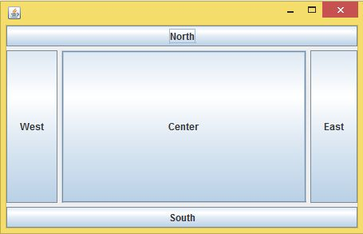
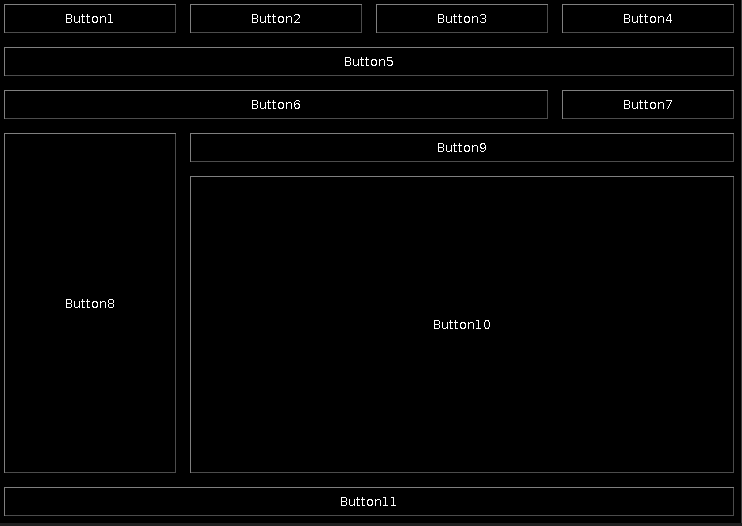

AWT 是 Abstract Window ToolKit (抽象窗口工具包)的缩写，这个工具包提供了一套与本地图形界面进行交互的接口。AWT 中的图形函数与操作系统所提供的图形函数之间有着一一对应的关系，我们把它称为peers。 也就是说，当我们利用 AWT 来构件图形用户界面的时候，我们实际上是在利用操作系统所提供的图形库。由于不同操作系统的图形库所提供的功能是不一样的，在一个平台上存在的功能在另外一个平台上则可能不存在。为了实现 Java 语言所宣称的"一次编译，到处运行"的概念，AWT 不得不通过牺牲功能来实现其平台无关性，也就是说，AWT 所提供的图形功能是各种通用型操作系统所提供的图形功能的交集。由于 AWT 是依靠本地方法来实现其功能的，我们通常把 AWT 控件称为重量级控件。
AWT 是抽象窗口组件工具包，是 Java 最早的用于编写图形节目应用程序的开发包。
AWT 和 Swing 之间的基本区别：AWT 是基于本地方法的 C/C++ 程序，其运行速度比较快；Swing 是基于 AWT 的 Java 程序，其运行速度比较慢。对于一个嵌入式应用来说，目标平台的硬件资源往往非常有限，而应用程序的运行速度又是项目中至关重要的因素。在这种矛盾的情况下，简单而高效的 AWT 当然成了嵌入式 Java 的第一选择。而在普通的基于 PC 或者是工作站的标准 Java 应用中，硬件资源对应用程序所造成的限制往往不是项目中的关键因素，所以在标准版的 Java 中则提倡使用 Swing， 也就是通过牺牲速度来实现应用程序的功能。
Swing 是在 AWT 的基础上构建的一套新的图形界面系统，它提供了 AWT 所能够提供的所有功能，并且用纯粹的 Java 代码对 AWT 的功能进行了大幅度的扩充。例如说并不是所有的操作系统都提供了对树形控件的支持， Swing 利用了 AWT 中所提供的基本作图方法对树形控件进行模拟。由于 Swing 控件是用 100% 的 Java 代码来实现的，因此在一个平台上设计的树形控件可以在其他平台上使用。由于在 Swing 中没有使用本地方法来实现图形功能，我们通常把 Swing 控件称为轻量级控件。
Swing 是为了解决 AWT 存在的问题而新开发的包，它以 AWT 为基础的。
SWT 是 Standard Widget Toolkit (标准部件工具包)的缩写，是 IBM 创建一个为 Java 设计提供了高效的部件工具包。与 AWT/Swing 有相似的用处，著名的开源 eclipse 就是用 SWT 开发的。
SWT 的构建者从 AWT 和 Swing 实现中学习了很多经验，他们试图构建一个集二者优点于一体而没有二者的缺点的系统。
在大部分情况中，决定都是在 Swing 与结合了 JFace 的 SWT 之间进行的。通常来说，每个工具包都非常完整且功能强大，足以构建功能完善的 GUI，但是 Swing 通常要比单独使用 SWT（不使用 JFace 时）更好。Swing 具有内嵌于 Java 技术的优点，是完全可移植的，无可争议地是一种更好的架构。Swing 也具有高级图形应用程序所需要的优点。SWT 具有可以作为本地应用程序实现的优点，这可以提高性能，并利用基于 SWT 的 GUI 来实现本地兼容性。
如果只为一种平台来开发系统，那么 SWT 就具有主机兼容性方面的优点，包括与主机特性的集成，例如在 Windows 上对 ActiveX 控件的使用。
JavaFx 是 Java 中的最新的界面库，于 2008 年 12 月 05 日发布。有两种编写模式，一种是纯代码编写，一种是 CODE+FXML+CSS。
JavaFX 是 Java 的下一代图形用户界面工具包。JavaFX 是一组图形和媒体 API，我们可以用它们来创建和部署富客户端应用程序。
JavaFX API 与 Java SE 运行时环境（JRE）和 Java 开发工具包（JDK）捆绑在一起。 JavaFX 应用程序可以在所有主要的桌面平台上编译和运行。
JavaFX 允许开发人员快速构建丰富的跨平台应用程序。JavaFX 通过硬件加速图形支持现代 GPU。
JavaFX 允许开发人员在单个编程接口中组合图形，动画和 UI 控件。
JavaFX 技术有着良好的前景，包括可以直接调用 Java API 的能力。因为 JavaFX Script 是静态类型，它同样具有结构化代码、重用性和封装性，如包、类、继承和单独编译和发布单元，这些特性使得使用 JavaFX 技术创建和管理大型程序变为可能。
SWT 、AWT 、SWING 和 JAVAFX 优劣势比较:
| Awt | Swing | SWT | JavaFx | |
|---|---|---|---|---|
| 优势 | 1. 运行速度快 | 1. 多平台 | 1. 介于Awt和Swing之间 | 1. 支持控件多 |
| 2. 稳定 | 2. 默认控件漂亮 | |||
| 3. 编写接口简洁 | ||||
| 4. 开发效率高 | ||||
| 劣势 | 1. 夸平台效果不好 | 1. 运行效率低 | 1. 介于Awt和Swing之间 | 1. 运行效率一般 |
| 2. 开发效率低 | 2. 开发效率不高 | |||
| 3. 接口繁琐 | ||||
| 4. 默认主题界面不美观 | ||||
| 5. 精通耗时长 |
SWT 、AWT 和 SWING 特性的比较:
| 功能/角色/外表 | AWT | Swing | SWT（风格） |
|---|---|---|---|
| 显示静态文本 | Label | JLabel | Label, CLabel |
| 显示多行静态文本 | Multiple Labels | 具有 HTML 内容的 Multiple JLabels 或 JLabel | 具有新行的 Multiple Labels 或 Label |
| 显示多行格式化静态文本 | 具有不同字体的 Multiple Labels | 具有 HTML 内容的 JLabel | 具有不同字体的 Multiple Labels |
| 单行文本输入 | TextField | JTextField | Text(SWT.SINGLE) |
| 多行文本输入 | TextArea | JTextArea | Text(SWT.MULTI) |
| 显示图像 | N/A | JLabel | Label |
| 显示文本和图像 | N/A | JLabel | CLabel |
| 提示弹出帮助 | N/A | 组件的 setToolTip，JToolTip 子类 | 控件的 setToolTip |
| 风格化的文本输入 | N/A | JEditorPane | StyledText |
| 从条目列表中进行选择 | List | JList | List |
| 简单按下具有文本的按钮 | Button | JButton | Button(SWT.PUSH) |
| 简单按下具有文本或图像的按钮 | N/A | JButton | Button(SWT.PUSH) |
| 绘图区域；可能用于定制控件 | Canvas | JPanel | Canvas |
| 选中/取消复选框 | CheckBox | JCheckBox | Button(SWT.CHECK) |
| 单选按钮选择 | CheckBoxGroup | ButtonGroup 和 Menu | Group 和 Menu |
| 从一个下拉列表中选择 | Choice | JComboBox | Combo、CCombo |
| 输入文本或从下拉列表中选择 | N/A | JComboBox | Combo、CCombo |
| 可滚动区域 | ScrollPane | JScrollPane | 创建 Scrollable 子类 |
| 顶层窗口 | Dialog、Frame、Window | JDialog、JFrame、JWindow | 具有不同风格的 Shell |
| 通用窗口 | Window | JWindow | Shell |
| 框架窗口 | Frame | JFrame | Shell(SWT.SHELL_TRIM) |
| 对话框窗口 | Dialog | JDialog | Shell(SWT.DIALOG_TRIM) |
| 菜单 | Menu | JMenu | Menu |
| MenuItem | MenuItem | JMenuItem | MenuItem |
| 菜单快捷键 | 通用击键 | 与 AWT 相同 | 依赖于主机的快捷键 |
| 弹出菜单 | PopupMenu | JPopupMenu | Menu(SWT.POPUP) |
| 菜单条 | MenuBar | JMenuBar | Menu(SWT.BAR) |
| 显示插入符号 | N/A | Caret | Caret |
| Web 浏览器 | N/A | JTextPane（HTML 3.2） | Browser（通过嵌入式浏览器） |
| Web 页面中的嵌入式控件 | Applet | JApplet | 主机控件（例如 OLE） |
| 其他控件的通用容器 | Panel | JPanel | Composite |
| 其他控件的有边界通用容器 | Panel（如果是手工画的） | 具有 Border 的 JPanel | Composite(SWT.BORDER) |
| 其他控件的有边界和标题的通用容器 | N/A | 具有 TitledBorder 的 JPanel | Group |
| 单选按钮（一个被选中） | Checkbox | JRadioButton | Button(SWT.RADIO) |
| 单选按钮的控件扩充 | CheckboxGroup | RadioButtonGroup | Group |
| 箭头按钮 | N/A | 具有图像的 JButton | Button(SWT.ARROW) |
| 支持文本显示方向 | 通过 ComponentOrientation | 与 AWT 相同 | 很多组件都可以支持这种风格 |
| 焦点切换 | Policy 和 Manager 对象 | 与 AWT 相同 | 下一个控件 |
| 定制对话框 | Dialog 子类 | JDialog 子类 | Dialog 子类 |
| 访问系统事件 | EventQueue 服务 | 与 AWT 相同 | Display 服务（不如 AWT 健壮） |
| 系统访问对话框 | FileDialog | JColorChooser、JFileChooser | ColorDialog、DirectoryDialog、FileDialog、FontDialog、PrintDialog |
| 显示简单消息对话框 | N/A（必须是 Dialog 子类） | JOptionPane 静态方法 | 具有很多风格的 MessageBox |
| 显示简单提示对话框 | N/A（必须是 Dialog 子类） | JOptionPane 静态方法 | N/A（JFace 中用来实现这种功能的子类） |
| 布局管理器 | BorderLayout、CardLayout、FlowLayout、GridLayout、GridBagLayout | AWT 加上 BoxLayout、CenterLayout、SpringLayout | FillLayout、FormLayout、GridLayout、RowLayout、StackLayout |
| 基本的绘图控件 | Canvas | JPanel | Canvas |
| 基本绘图 | Graphics 和 Graphics2D 对象 —— 基本形状和文本，任意 Shapes 和 Strokes、Bezier 以及文件 | 与 AWT 相同 | GC 对象 —— 基本形状和文本 |
| 绘图转换 | Affine，合成 | 与 AWT 相同 | N/A |
| 离屏绘图（Off screen drawing） | BufferedImage、drawImage | 与 AWT 相同 | Image、drawImage |
| 双缓冲区 | 手工 | 自动或手工 | 除非由主机控件提供，否则就是手工 |
| 打印 | PrintJob 和 PrintGraphics | 与 AWT 相同 | 向 Printer 设备绘图 |
| 定制颜色 | Color | 与 AWT 相同 | Color |
| 定制字体 | Font、FontMetrics | 与 AWT 相同 | Font |
| 光标选择 | Cursor | 与 AWT 相同 | Cursor/td> |
| 图像特性 | 从文件中加载，动态创建，可扩充地编辑 | 与 AWT 相同 | 从文件中加载，动态创建，基本编辑 |
| 输入自动化 | Robot | 与 AWT 相同 | N/A |
| 显示工具条 | N/A | JToolBar | ToolBar、CoolBar |
| 显示进度条 | N/A | JProgressBar | ProgressBar |
| 将空间划分成区域 | N/A | JSplitPane | Sash 或 SashForm |
| 显示一个分标签页的区域 | N/A | JTabbedPane | TabFolder、CTabFolder |
| 显示制表信息 | N/A | JTable | Table |
| 格式化表的列 | N/A | TableColumn | TableColumn |
| 显示层次化信息 | N/A | JTree | Tree |
| 从一定范围的值中进行选择 | N/A | JSlider | Slider |
| 从一组离散范围的值中进行选择 | N/A | JSpinner | Scale |
| 对于基本显示的访问 | Toolkit、GraphicsConfiguration、GraphicsDevice | 与 AWT 相同 | Display |
| 将条目添加到系统托盘（system tray）中 | N/A | N/A | Tray |
| 关键：N/A —— 不适用。在很多情况中，这种特性都可以通过创建定制控件或控件容器或利用其他定制编程来实现，不过实现的难度会有所不同。 | |||
java.lang.Object
java.awt.Component
java.awt.Container
java.awt.Window
java.awt.Frame
public class Frame extends Window implements MenuContainer {
/** 实现对 Frame 类的可访问性支持 */
protected class AccessibleAWTFrame extends AccessibleAWTWindow {}
/** 只是窗口的状态 */
public static final int NORMAL = 0; // 窗体处于 "normal" 状态
public static final int ICONIFIED = 1; // 此状态位指示将窗体图标化
public static final int MAXIMIZED_BOTH = 6; // 此状态位掩码指示将窗体完全最大化
public static final int MAXIMIZED_HORIZ = 2; // 此状态位指示在水平方向将窗体最大化
public static final int MAXIMIZED_VERT = 4; // 此状态位指示在垂直方向将窗体最大化
/** 构造的 Frame 实例最初是不可见的 */
public Frame() {}
public Frame(String title) {}
public Frame(GraphicsConfiguration gc) {}
public Frame(String title, GraphicsConfiguration gc) {}
}
/** 所有菜单相关容器的超类 */
public interface MenuContainer {
Font getFont();
void remove(MenuComponent comp);
}
Frame 是带有标题和边框的顶层窗口。
窗体的大小包括为边框指定的所有区域。边框区域的尺寸可以使用 getInsets 方法获得，但是，由于这些尺寸与平台相关，因此在通过调用 pack 或 show 将窗体设置为可显示之前，将无法获得有效的 insets 值。由于窗体的总大小包括了边框区，因此边框实际上遮掩了窗体的部分区域，并将可用于在矩形中呈现和/或显示子部件的区域限制在一个矩形内，该矩形左上角的位置为 (insets.left, insets.top)，宽度为 width - (insets.left + insets.right)，长度为 height - (insets.top + insets.bottom)。
窗体的默认布局为 BorderLayout。
使用 setUndecorated，窗体可以关闭本机装饰（即 Frame 和 Titlebar）。但只有在窗体不是 displayable 时才能这样做。
在多屏幕环境中，通过使用 Frame(GraphicsConfiguration) 或 Frame(String title, GraphicsConfiguration) 构造 Frame，可以在不同的屏幕设备上创建 Frame。GraphicsConfiguration 对象是目标屏幕设备的 GraphicsConfiguration 对象之一。
在虚拟设备多屏幕环境中（其中桌面区域可以跨越多物理屏幕设备），所有配置的边界都是相对于虚拟坐标系的。虚拟坐标系的原点位于主物理屏幕的左上角。
static Frame[] getFrames() -- 返回一个此应用程序创建的所有 Frame 所组成的数组
MenuBar getMenuBar() -- 获取此窗体的菜单栏
void setMenuBar(MenuBar mb) -- 将此窗体的菜单栏设置为指定的菜单栏
void remove(MenuComponent m) -- 从此窗体移除指定的菜单栏
int getExtendedState() -- 获取此窗体的状态
void setExtendedState(int state) -- 设置此窗体的状态
Image getIconImage() -- 返回要作为此窗体图标显示的图像
void setIconImage(Image image) -- 设置要作为此窗口图标显示的图像
Rectangle getMaximizedBounds() -- 获取此窗体的最大化边界
void setMaximizedBounds(Rectangle bounds) -- 设置此窗体的最大化边界
String getTitle() -- 获得窗体的标题
void setTitle(String title) -- 将此窗体的标题设置为指定的字符串
boolean isResizable() -- 指示此窗体是否可由用户调整大小
void setResizable(boolean resizable) -- 设置此窗体是否可由用户调整大小
void setUndecorated(boolean undecorated) -- 禁用/启用窗体的装饰(true 将不显示窗口，关闭，最大化，最小化将不可见)
boolean isUndecorated() -- 指示此窗体是否未装饰
void addNotify() -- 通过将此窗体连接到本机屏幕资源，使其成为可显示的
void removeNotify() -- 通过移除与本机屏幕资源的连接，将此窗体设置为不可显示的
protected String paramString() -- 返回表示此 Frame 状态的字符串
void setBackground(Color bgColor) -- 设置此窗体的背景颜色
void setOpacity(float opacity) -- 设置透明度(依赖于平台)
void setShape(Shape shape) -- 设置窗口的形状
AccessibleContext getAccessibleContext() -- 获取与此窗体有关的 AccessibleContext
public class Window extends Container implements Accessible {
/** Window 类型 */
public enum Type {
NORMAL, // 正常窗口
UTILITY, // 弹出窗口，如下拉菜单，对话框
POPUP // 实用程序窗口，通常是一个小窗口，如工具栏或调色板
}
/** 实现对 Window 类的可访问性支持 */
protected class AccessibleAWTWindow extends AccessibleAWTContainer {}
public Window(Frame owner) {}
public Window(Window owner) {}
public Window(Window owner, GraphicsConfiguration gc) {}
}
Window 对象是一个没有边界和菜单栏的顶层窗口。窗口的默认布局是 BorderLayout。
构造窗口时，它必须拥有窗体、对话框或其他作为其所有者定义的窗口。
注：顶层窗口（包括 Window、Frame 和 Dialog）的位置和大小受桌面窗口管理系统的控制。对 setLocation、setSize 和 setBounds 的调用是转发到窗口管理系统的请求（不是指令）。将尽所有努力响应这样的请求。但是，在某些情况下，窗口管理系统可以忽略这样的请求，或修改请求的几何结构，以放置和调整 Window 的大小，使之更好地与桌面设置匹配。
应用程序可以随意设置不可见 Window 的大小和位置，但是当 Window 可见时，窗口管理系统可以随后更改它的大小和/或位置。将生成一个或多个 ComponentEvent 来表示新的几何结构。
static Window[] getOwnerlessWindows() -- 返回此应用程序创建的所有没有所有者的 Window 组成的数组
static Window[] getWindows() -- 返回此应用程序创建的所有 Window 数组
void addPropertyChangeListener(PropertyChangeListener listener) -- 将 PropertyChangeListener 添加到侦听器列表
void addPropertyChangeListener(String propertyName, PropertyChangeListener listener) -- 将某个特定属性的侦听器列表
/** 包括此窗体的以下属性:
* this Window's font ("font")
* this Window's background color ("background")
* this Window's foreground color ("foreground")
* this Window's focusability ("focusable")
* this Window's focus traversal keys enabled state ("focusTraversalKeysEnabled")
* this Window's Set of FORWARD_TRAVERSAL_KEYS ("forwardFocusTraversalKeys")
* this Window's Set of BACKWARD_TRAVERSAL_KEYS ("backwardFocusTraversalKeys")
* this Window's Set of UP_CYCLE_TRAVERSAL_KEYS ("upCycleFocusTraversalKeys")
* this Window's Set of DOWN_CYCLE_TRAVERSAL_KEYS ("downCycleFocusTraversalKeys")
* this Window's focus traversal policy ("focusTraversalPolicy")
* this Window's focusable Window state ("focusableWindowState")
* this Window's always-on-top state("alwaysOnTop")
*/
void addWindowFocusListener(WindowFocusListener l) -- 添加指定的窗口焦点侦听器
void removeWindowFocusListener(WindowFocusListener l) -- 移除指定的窗口焦点侦听器，以便不再从此窗口接收窗口事件
void addWindowStateListener(WindowStateListener l) -- 添加指定的窗口状态侦听器(最大化，最小化等)
void removeWindowStateListener(WindowStateListener l) -- 移除指定的窗口状态侦听器，以便不再从此窗口接收窗口事件
void addWindowListener(WindowListener l) -- 添加指定的窗口侦听器(包括以上两项，参见：WindowAdapter)
void removeWindowListener(WindowListener l) -- 移除指定的窗口侦听器，以便不再从此窗口接收窗口事件
WindowFocusListener[] getWindowFocusListeners() -- 返回在此窗口注册的所有窗口焦点侦听器所组成的数组
WindowStateListener[] getWindowStateListeners() -- 返回在此窗口注册的所有窗口状态侦听器所组成的数组
WindowListener[] getWindowListeners() -- 返回在此窗口注册的所有窗口侦听器所组成的数组
<T extends EventListener> T[] getListeners(Class<T> listenerType) -- 返回当前在此 Window 上注册的所有对象所组成的数组
protected void processEvent(AWTEvent e) -- 处理此窗口上的事件
protected void processWindowEvent(WindowEvent e) -- 处理此窗口上发生的窗口事件
protected void processWindowFocusEvent(WindowEvent e) -- 处理此窗口上发生的窗口焦点事件
protected void processWindowStateEvent(WindowEvent e) -- 处理此窗口上发生的窗口状态事件
void setSize(Dimension d) -- 设置窗体大小
void setSize(int width, int height) -- 设置窗体大小
void setMinimumSize(Dimension minimumSize) -- 将此窗口的最小大小设置为一个常量值
Color getBackground() -- 获取此窗体的背景色
void setBackground(Color bgColor) -- 设置背景颜色
void paint(Graphics g) -- 使用 Graphics 绘制此容器
void setBounds(int x, int y, int width, int height) -- 移动组件并调整其大小
void setBounds(Rectangle r) -- 使用矩形设置此窗体位置和大小
void setLocation(int x, int y) -- 设置窗体左上角距离屏幕的左上角的位置
void setLocation(Point p) -- 设置窗体左上角距离屏幕的左上角的位置
void setLocationByPlatform(boolean locationByPlatform) -- 设置窗口下次可见时应该出现的位置：本机窗口系统的默认位置，还是当前位置
void setLocationRelativeTo(Component c) -- 位置为相对于某个组件的位置
boolean isLocationByPlatform() -- 如果此窗口下次可见时，出现在本机窗口操作系统的默认位置，则返回 true
void setVisible(boolean b) -- 设置此窗体可见性
void pack() -- 调整此窗口的大小，以适合其子组件的首选大小和布局
boolean isShowing() -- 检查此窗口是否显示在屏幕上
void dispose() -- 释放由此 Window、其子组件及其拥有的所有子组件所使用的所有本机屏幕资源
void addNotify() -- 通过创建到本机屏幕资源的连接，使此窗口变得可显示
void removeNotify() -- 通过移除此 Container 到其本机屏幕资源的连接，使其不可显示
void toBack() -- 如果此窗口是可视的，则将此窗口置于后方，如果它是焦点窗口或活动窗口，则会导致丢失焦点或活动状态
void toFront() -- 如果此窗口是可见的，则将此窗口置于前端，并可以将其设为焦点 Window
void setCursor(Cursor cursor) -- 设置指定光标的光标图像
void setIconImage(Image image) -- 设置要作为此窗口图标显示的图像
List<Image> getIconImages() -- 返回要作为此窗口的图标显示的图像序列
void setIconImages(List<? extends Image> icons) -- 设置要作为此窗口的图标显示的图像序列
float getOpacity() -- 获取透明度值(依赖平台)
void setOpacity(float opacity) -- 设置透明度(依赖平台)
boolean isOpaque() -- 指示窗口当前是否不透明
Shape getShape() -- 返回此窗体的图形
void setShape(Shape shape) -- 设置此窗体的图形
Window.Type getType() -- 获取窗体类型
void setType(Window.Type type) -- 设置此窗体类型
Locale getLocale() -- 如果设置了区域，则获取与此窗口关联的 Locale 对象
Window[] getOwnedWindows() -- 返回包含此窗口当前拥有的所有窗口的数组
Window getOwner() -- 返回此窗口的所有者
Toolkit getToolkit() -- 返回此窗体的工具包
boolean isActive() -- 返回此窗口是否为活动窗口
boolean isValidateRoot() -- 是否为根窗口
boolean getFocusableWindowState() -- 返回如果此窗口满足 isFocusableWindow 中列出的其他要求，其是否可以成为焦点窗口
void setFocusableWindowState(boolean focusableWindowState) -- 设置如果此窗口满足 isFocusableWindow 中列出的其他要求，其是否可以成为焦点窗口
Container getFocusCycleRootAncestor() -- 始终返回 null，因为窗口没有祖先；它们表示组件层次结构的顶层
void setFocusCycleRoot(boolean focusCycleRoot) -- 不执行任何操作，因为窗口必须始终是焦点遍历循环的根
boolean isFocusCycleRoot() -- 始终返回 true，因为所有窗口必须是焦点遍历循环的根
Component getFocusOwner() -- 如果此窗口为焦点窗口，则返回是焦点窗口的子组件
Component getMostRecentFocusOwner() -- 返回此窗口的子组件，该子组件在此窗口为焦点窗口时将接收焦点
boolean isFocusableWindow() -- 返回此窗口是否可以成为焦点窗口
boolean isFocused() -- 返回此窗口是否为焦点窗口
boolean isAutoRequestFocus() -- 是否可以自动获取焦点
void setAutoRequestFocus(boolean autoRequestFocus) -- 设置是否自动获取焦点
Set<AWTKeyStroke> getFocusTraversalKeys(int id) -- 获取此窗口的焦点遍历键
InputContext getInputContext() -- 获取此窗口的输入上下文
Dialog.ModalExclusionType getModalExclusionType() -- 返回此窗口的模式排斥类型
void setModalExclusionType(Dialog.ModalExclusionType exclusionType) -- 指定此窗口的模式排斥类型
String getWarningString() -- 获取此窗口中显示的警告字符串
AccessibleContext getAccessibleContext() -- 获取与此窗口关联的 AccessibleContext
boolean isAlwaysOnTopSupported() -- 返回此窗口是否支持 always-on-top 模式
boolean isAlwaysOnTop() -- 返回此窗口是否为 always-on-top 窗口
void setAlwaysOnTop(boolean alwaysOnTop) -- 设置此窗口是否应该始终位于其他窗口上方
void createBufferStrategy(int numBuffers) -- 为此组件上的多缓冲创建一个新策略
BufferStrategy getBufferStrategy() -- 返回此组件使用的 BufferStrategy
void createBufferStrategy(int num, BufferCapabilities caps) -- 根据所需缓冲区能力为此组件上的多缓冲创建新策略
public class Container extends Component {
/** 用于对可访问性提供默认支持的 Container 内部类 */
protected class AccessibleAWTContainer extends AccessibleAWTComponent {}
}
Container 是一般的 Abstract Window Toolkit(AWT) 容器对象是一个可包含其他 AWT 组件的组件。
添加到容器中的组件放在一个列表中。列表的顺序将定义组件在容器内的正向堆栈顺序。如果将组件添加到容器中时未指定索引，则该索引将被添加到列表尾部（此后它位于堆栈顺序的底部）。
Component add(Component comp) -- 将指定组件追加到此容器的尾部
Component add(Component comp, int index) -- 将指定组件添加到此容器的给定位置上
void add(Component comp, Object constraints) -- 将指定的组件按约束条件添加到此容器(不同的 LayoutManager 使用不同的约束类型，约束条件参照下面的 LayoutManager)
void add(Component comp, Object constraints, int index) -- 使用指定约束，将指定组件添加到此容器的指定索引所在的位置上
Component add(String name, Component comp) -- 将指定组件添加到此容器中
protected void addImpl(Component comp, Object constraints, int index) -- 将指定组件添加到此容器的指定索引所在的位置上
void remove(Component comp) -- 从此容器中移除指定组件
void remove(int index) -- 从此容器中移除 index 指定的组件
void removeAll() -- 从此容器中移除所有组件
void addNotify() -- 通过将这个 Container 连接到本机屏幕资源，使其可以显示
void removeNotify() -- 通过移除此 Container 到其本机屏幕资源的连接，使其不可显示
void invalidate() -- 使容器失效
void validate() -- 验证此容器及其所有子组件
protected void validateTree() -- 递归继承容器树，对于所有被标记为需要重新计算布局的子树（标记为无效的那些子树）重新计算布局
void paint(Graphics g) -- 绘制容器
void paintComponents(Graphics g) -- 绘制此容器中的每个组件
void print(Graphics g) -- 打印容器
void printComponents(Graphics g) -- 打印此容器中的每个组件
void update(Graphics g) -- 更新容器
void setLayout(LayoutManager mgr) -- 设置此容器的布局管理器
void doLayout() -- 使此容器布置其组件
void addContainerListener(ContainerListener l) -- 添加指定容器的侦听器(添加/移除组件到此容器监听)
void removeContainerListener(ContainerListener l) -- 移除指定容器的侦听器，从而不再接收来自此容器的容器事件
ContainerListener[] getContainerListeners() -- 返回已在此容器上注册的所有容器侦听器的数组
protected void processContainerEvent(ContainerEvent e) -- 通过将发生在此容器上的容器事件指派给所有已注册的 ContainerListener 对象来处理这些事件
protected void processEvent(AWTEvent e) -- 处理关于此容器的事件
<T extends EventListener> T[] getListeners(Class<T> listenerType) -- 返回当前已在此 Container 上注册的指定类型的监听器数组
void addPropertyChangeListener(PropertyChangeListener listener) -- 将一个 PropertyChangeListener 添加到侦听器列表中
void addPropertyChangeListener(String propertyName, PropertyChangeListener listener) -- 将某个特定属性的侦听器列表
Component findComponentAt(int x, int y) -- 对包含指定位置的可视子组件进行定位
Component findComponentAt(Point p) -- 对包含指定点的可视子组件进行定位
Component getComponent(int n) -- 获取此容器中的第 n 个组件
Component getComponentAt(int x, int y) -- 对包含 x，y 位置的组件进行定位
Component getComponentAt(Point p) -- 获取包含指定点的组件
int getComponentCount() -- 获取此面板中的组件数
Component[] getComponents() -- 获取此容器中的所有组件
void applyComponentOrientation(ComponentOrientation o) -- 设置此容器和其中包含的所有组件的 ComponentOrientation 属性
boolean isAncestorOf(Component c) -- 检查该组件是否包含在此容器的组件层次结构中
int getComponentZOrder(Component comp) -- 返回容器内组件的 z 顺序索引
void setComponentZOrder(Component comp, int index) -- 将指定组件移动到容器中指定的 z 顺序索引
Set<AWTKeyStroke> getFocusTraversalKeys(int id) -- 为此 Container 的给定遍历操作返回焦点遍历键的 Set
void setFocusTraversalKeys(int id, Set<? extends AWTKeyStroke> keystrokes) -- 为此 Container 的给定遍历操作设置焦点遍历键
boolean areFocusTraversalKeysSet(int id) -- 返回是否已经为此 Container 明确定义了用于给定焦点遍历操作的焦点遍历键的 Set
boolean isFocusTraversalPolicySet() -- 返回是否为此 Container 明确设置焦点遍历策略
FocusTraversalPolicy getFocusTraversalPolicy() -- 返回焦点遍历策略
void setFocusTraversalPolicy(FocusTraversalPolicy policy) -- 如果此 Container 是一个焦点循环根，则设置将管理此 Container 的子代的键盘遍历的焦点遍历策略
void setFocusTraversalPolicyProvider(boolean provider) -- 设置是否将用此容器提供焦点遍历策略
boolean isFocusTraversalPolicyProvider() -- 返回此容器是否提供焦点遍历策略
boolean isFocusCycleRoot() -- 返回此 Container 是否是某个焦点遍历循环的根
void setFocusCycleRoot(boolean focusCycleRoot) -- 设置此 Container 是否是某个焦点遍历循环的根
boolean isFocusCycleRoot(Container container) -- 返回指定的 Container 是否是此 Container 的焦点遍历循环的焦点循环根
void transferFocusDownCycle() -- 将焦点向下传输一个焦点遍历循环
Dimension getMaximumSize() -- 返回此容器的最大大小
Dimension getPreferredSize() -- 返回此容器的首选大小
Dimension getMinimumSize() -- 返回此容器的最小大小
Insets getInsets() -- 确定此容器的 insets，它指示容器边框的大小
LayoutManager getLayout() -- 获取此容器的布局管理器
float getAlignmentX() -- 返回沿 x 轴的对齐方式
float getAlignmentY() -- 返回沿 y 轴的对齐方式
void setFont(Font f) -- 设置此容器的字体
Point getMousePosition(boolean allowChildren) -- 如果 Container 位于鼠标指针下，则返回鼠标指针在此 Container 的坐标中的位置
boolean isValidateRoot() --
protected String paramString() -- 返回表示此 Container 的状态的字符串
void list(PrintStream out, int indent) -- 将此容器的清单打印到指定输出流，从指定缩排位置开始
void list(PrintWriter out, int indent) -- 将一个列表打印到指定打印编写器，从指定缩排位置开始
public abstract class Component implements ImageObserver, MenuContainer, Serializable {
public static final float TOP_ALIGNMENT = 0.0f; // 顶部对齐
public static final float BOTTOM_ALIGNMENT = 1.0f; // 底部对齐
public static final float CENTER_ALIGNMENT = 0.5f; // 居中对齐
public static final float LEFT_ALIGNMENT = 0.0f; // 左对齐
public static final float RIGHT_ALIGNMENT = 1.0f; // 右对齐
protected Component() {}
protected AccessibleContext accessibleContext = null;
/** 常见方式的枚举，指示组件的基线可以随大小的更改而更改 */
public enum BaselineResizeBehavior {
CONSTANT_ASCENT, // 指示基线相对于 y 原点保持不变
CENTER_OFFSET, // 指示基线与组件的中心保持固定的距离
CONSTANT_DESCENT, // 指示基线相对于高度保持不变，且不会随着宽度不同而发生更改
OTHER // 指示基线调整行为无法使用其他任何常量表示
}
/** 用于将屏幕外的画面以位图传输方式传输到一个组件的内部类 */
protected class BltBufferStrategy extends BufferStrategy {}
/** 在组件上翻转缓冲区的内部类 */
protected class FlipBufferStrategy extends BufferStrategy {}
/** 用来为可访问性提供默认支持的 Component 的内部类 */
protected abstract class AccessibleAWTComponent extends AccessibleContext implements Serializable,
AccessibleComponent {}
}
/** 用于在构造 Image 时，接收有关 Image 信息通知的异步更新接口 */
public interface ImageObserver {
/** infoflags 参数 */
int WIDTH = 1; // 指示基本图像的宽度现在可用
int HEIGHT = 2; // 指示基本图像的高度现在可用
int PROPERTIES = 4; // 指示该图像的属性现在可用
int SOMEBITS = 8; // 指示已提供了绘制图像缩放变体所需的更多像素
int FRAMEBITS = 16; // 指示多帧图像（以前绘制的）的另一个完整帧现在可以再次绘制
int ALLBITS = 32; // 指示现在已完成了一幅以前绘制的静态图像，并且可以其最终形式再次绘制它
int ERROR = 64; // 指示被异步跟踪的图像遇到了错误
int ABORT = 128; // 指示被异步跟踪的图像在生成完成前即已中止
/** 当以前使用异步接口所请求的图像的信息变得可用时就调用此方法 */
boolean imageUpdate(Image img, int infoflags, int x, int y, int width, int height);
}
/** 所有菜单相关容器的超类 */
public interface MenuContainer {
Font getFont(); // 获取使用的字体
void remove(MenuComponent comp); // 移除指定的菜单组件
}
Component 是一个具有图形表示能力的对象，可在屏幕上显示，并可与用户进行交互。
Component 类是与菜单不相关的 Abstract Window Toolkit 组件的抽象超类。还可以直接扩展类 Component 来创建一个轻量级组件。轻量级组件是与本机不透明窗口不相关的组件。
void addComponentListener(ComponentListener l) -- 添加指定的组件侦听器(位置，大小，是否可见)
void addFocusListener(FocusListener l) -- 添加指定的焦点侦听器
void addHierarchyBoundsListener(HierarchyBoundsListener l) -- 添加指定的层次结构边界侦听器
void addHierarchyListener(HierarchyListener l) -- 添加指定的层次结构侦听器
void addInputMethodListener(InputMethodListener l) -- 添加指定的输入方法侦听器
void addKeyListener(KeyListener l) -- 添加指定的按键侦听器
void addMouseListener(MouseListener l) -- 添加指定的鼠标侦听器
void addMouseMotionListener(MouseMotionListener l) -- 添加指定的鼠标移动侦听器
void addMouseWheelListener(MouseWheelListener l) -- 添加指定的鼠标滚轮侦听器
void removeComponentListener(ComponentListener l) -- 移除指定的组件侦听器
void removeFocusListener(FocusListener l) -- 移除指定的焦点侦听器
void removeHierarchyBoundsListener(HierarchyBoundsListener l) -- 移除指定的层次结构边界侦听器
void removeHierarchyListener(HierarchyListener l) -- 移除指定的层次结构侦听器
void removeInputMethodListener(InputMethodListener l) -- 移除指定的输入方法侦听器
void removeKeyListener(KeyListener l) -- 移除指定的按键侦听器
void removeMouseListener(MouseListener l) -- 移除指定的鼠标侦听器
void removeMouseMotionListener(MouseMotionListener l) -- 移除指定的鼠标移动侦听器
void removeMouseWheelListener(MouseWheelListener l) -- 移除指定的鼠标滚轮侦听器
protected void processComponentEvent(ComponentEvent e) -- 处理组件上发生的组件事件
protected void processEvent(AWTEvent e) -- 处理组件上发生的事件
protected void processFocusEvent(FocusEvent e) -- 处理组件上发生的焦点事件
protected void processHierarchyBoundsEvent(HierarchyEvent e) -- 处理组件上发生的层次结构边界事件
protected void processHierarchyEvent(HierarchyEvent e) -- 处理组件上发生的层次结构事件
protected void processInputMethodEvent(InputMethodEvent e) -- 处理组件上发生的输入方法事件
protected void processKeyEvent(KeyEvent e) -- 处理组件上发生的按键事件
protected void processMouseEvent(MouseEvent e) -- 处理组件上发生的鼠标事件
protected void processMouseMotionEvent(MouseEvent e) -- 处理组件上发生的鼠标移动事件
protected void processMouseWheelEvent(MouseWheelEvent e) -- 处理组件上发生的鼠标滚轮事件
void addPropertyChangeListener(PropertyChangeListener listener) -- 属性改变监听器
void addPropertyChangeListener(String propertyName, PropertyChangeListener listener) -- 指定属性改变监听器
void removePropertyChangeListener(PropertyChangeListener listener) -- 移除一个属性改变监听器
void removePropertyChangeListener(String propertyName, PropertyChangeListener listener) -- 移除指定属性名的属性改变监听器
PropertyChangeListener[] getPropertyChangeListeners() -- 返回在此组件上所有已注册的属性更改侦听器的数组
PropertyChangeListener[] getPropertyChangeListeners(String propertyName) -- 返回与指定属性相关联的所有侦听器的数组
protected void firePropertyChange(String propertyName, boolean oldValue, boolean newValue) -- 通知属性发生改变
protected void firePropertyChange(String propertyName, int oldValue, int newValue) -- 通知属性发生改变
protected void firePropertyChange(String propertyName, Object oldValue, Object newValue) -- 通知属性发生改变
void firePropertyChange(String propertyName, byte oldValue, byte newValue) -- 通知属性发生改变
void firePropertyChange(String propertyName, char oldValue, char newValue) -- 通知属性发生改变
void firePropertyChange(String propertyName, short oldValue, short newValue) -- 通知属性发生改变
void firePropertyChange(String propertyName, long oldValue, long newValue) -- 通知属性发生改变
void firePropertyChange(String propertyName, float oldValue, float newValue) -- 通知属性发生改变
void firePropertyChange(String propertyName, double oldValue, double newValue) -- 通知属性发生改变
void add(PopupMenu popup) -- 向组件添加指定的弹出菜单
void addNotify() -- 通过将此 Component 连接到一个本机屏幕资源使其成为可显示的
void applyComponentOrientation(ComponentOrientation orientation) -- 设置此组件及其包含的所有组件的 ComponentOrientation 属性
boolean areFocusTraversalKeysSet(int id) -- 返回是否为此 Component 显式定义了给定焦点遍历操作的焦点遍历键 Set
int checkImage(Image image, ImageObserver observer) -- 返回指定图像屏幕表示的构造状态
int checkImage(Image image, int width, int height, ImageObserver observer) -- 返回指定图像屏幕表示的构造状态
Image createImage(ImageProducer producer) -- 根据指定的图像生成器创建一幅图像
Image createImage(int width, int height) -- 创建一幅用于双缓冲的、可在屏幕外绘制的图像
VolatileImage createVolatileImage(int width, int height) -- 创建一幅用于双缓冲的、可变的、可在屏幕外绘制的图像
VolatileImage createVolatileImage(int width, int height, ImageCapabilities caps) -- 创建一幅具有给定能力的、可变的、可在屏幕外绘制的图像
protected AWTEvent coalesceEvents(AWTEvent existingEvent, AWTEvent newEvent) -- 将正发送的事件与现有事件组合在一起
boolean contains(int x, int y) -- 检查组件是否“包含”指定的点
boolean contains(Point p) -- 检查组件是否“包含”指定的点
protected void disableEvents(long eventsToDisable) -- 禁用由传递给此组件的指定事件掩码参数所定义的事件
protected void enableEvents(long eventsToEnable) -- 启用由传递给此组件的指定事件掩码参数所定义的事件
void dispatchEvent(AWTEvent e) -- 为组件或其子组件之一指派事件
void doLayout() -- 提示布局管理器布局此组件
void enableInputMethods(boolean enable) -- 启用或禁用此组件的输入方法支持
AccessibleContext getAccessibleContext() -- 获取与此 Component 相关的 AccessibleContext
float getAlignmentX() -- 返回 x 轴的对齐方式
float getAlignmentY() -- 返回 y 轴的对齐方式
Color getBackground() -- 获取组件的背景色
int getBaseline(int width, int height) -- 返回基线
Component.BaselineResizeBehavior getBaselineResizeBehavior() -- 返回一个指示组件的基线如何随大小发生更改的枚举
Rectangle getBounds() -- 以 Rectangle 对象的形式获取组件的边界
Rectangle getBounds(Rectangle rv) -- 将组件的边界存储到“返回值” rv 中并返回 rv
ColorModel getColorModel() -- 获取用于在输出设备上显示组件的 ColorModel 实例
Component getComponentAt(int x, int y) -- 确定此组件或其直接子组件之一是否包含（x，y）位置，并且如果是，则返回包含该位置的组件
Component getComponentAt(Point p) -- 返回包含指定点的组件或子组件
ComponentListener[] getComponentListeners() -- 返回在此组件上所有已注册的组件侦听器的数组
ComponentOrientation getComponentOrientation() -- 检索将用于排序此组件内的元素或文本的语言敏感的方向
Cursor getCursor() -- 获取组件中的光标
DropTarget getDropTarget() -- 获取与此 Component 相关的 DropTarget
Container getFocusCycleRootAncestor() -- 返回作为此 Component 焦点遍历循环的焦点循环根的 Container
FocusListener[] getFocusListeners() -- 返回在此组件上所有已注册的焦点侦听器的数组
Set<AWTKeyStroke> getFocusTraversalKeys(int id) -- 返回此 Component 的给定遍历操作的焦点遍历键 Set
boolean getFocusTraversalKeysEnabled() -- 返回是否已为此 Component 启用了焦点遍历键
Font getFont() -- 获取组件的字体
FontMetrics getFontMetrics(Font font) -- 获取指定字体的字体规格
Color getForeground() -- 获取组件的前景色
Graphics getGraphics() -- 为组件创建一个图形上下文
GraphicsConfiguration getGraphicsConfiguration() -- 获取与此 Component 相关的 GraphicsConfiguration
int getHeight() -- 返回组件的当前高度
HierarchyBoundsListener[] getHierarchyBoundsListeners() -- 返回在此组件上所有已注册的层次结构边界侦听器的数组
HierarchyListener[] getHierarchyListeners() -- 返回在此组件上所有已注册的层次结构侦听器的数组
boolean getIgnoreRepaint() -- 是否应该忽略接收操作系统发出的绘制消息
InputContext getInputContext() -- 获取此组件使用的输入上下文
InputMethodListener[] getInputMethodListeners() -- 返回在此组件上所有已注册的输入方法侦听器的数组
InputMethodRequests getInputMethodRequests() -- 获取输入方法请求处理程序，该处理程序支持此组件输入方法发出的请求
KeyListener[] getKeyListeners() -- 返回在此组件上所有已注册的按键侦听器的数组
<T extends EventListener>T[] getListeners(Class<T> listenerType) -- 返回一个当前在此 Component 上作为 FooListener 注册的所有对象的数组
Locale getLocale() -- 获取组件的语言环境
Point getLocation() -- 获取组件的位置，形式是指定组件左上角的一个点
Point getLocation(Point rv) -- 将组件的 x，y 原点存储到“返回值” rv 中并返回 rv
Point getLocationOnScreen() -- 获取组件的位置，形式是一个指定屏幕坐标空间中组件左上角的一个点
Dimension getMaximumSize() -- 获取组件的最大大小
Dimension getPreferredSize() -- 获取组件的首选大小
Dimension getMinimumSize() -- 获取组件的最小大小
MouseListener[] getMouseListeners() -- 返回在此组件上所有已注册的鼠标侦听器的数组
MouseMotionListener[] getMouseMotionListeners() -- 返回在此组件上所有已注册的鼠标移动侦听器的数组
Point getMousePosition() -- 如果此 Component 正好位于鼠标指针下，则返回鼠标指针在该 Component 的坐标空间中的位置
MouseWheelListener[] getMouseWheelListeners() -- 返回在此组件上所有已注册的鼠标滚轮侦听器的数组
String getName() -- 获取组件的名称
Container getParent() -- 获取此组件的父级
Dimension getSize() -- 以 Dimension 对象的形式返回组件的大小
Dimension getSize(Dimension rv) -- 将组件的宽度/高度存储到“返回值”rv 中并返回 rv
Toolkit getToolkit() -- 获取此组件的工具包
Object getTreeLock() -- 获取此组件用于 AWT 组件树和布局操作的锁定对象
int getWidth() -- 返回组件的当前宽度
int getX() -- 返回组件原点的当前 x 坐标
int getY() -- 返回组件原点的当前 y 坐标
boolean hasFocus() -- 如果此 Component 是焦点所有者，则返回 true
boolean imageUpdate(Image img, int infoflags, int x, int y, int w, int h) -- 图像已改变时重绘组件
void invalidate() -- 使此组件无效
boolean isBackgroundSet() -- 返回是否已为此组件显示地设置了背景色
boolean isCursorSet() -- 返回是否已为此组件显示地设置了光标
boolean isDisplayable() -- 确定此组件是否可以显示
boolean isDoubleBuffered() -- 如果将此组件绘制到一个随后复制到屏幕上的屏幕外图像（“缓冲区”），则返回 true
boolean isEnabled() -- 确定此组件是否已启用
boolean isFocusable() -- 返回此 Component 是否可以获得焦点
boolean isFocusCycleRoot(Container container) -- 返回指定的 Container 是否为此 Component 焦点遍历循环的焦点循环根
boolean isFocusOwner() -- 如果此 Component 是焦点所有者，则返回 true
boolean isFontSet() -- 返回是否已为此组件显示地设置了字体
boolean isForegroundSet() -- 返回是否已为此组件显式地设置了前景色
boolean isLightweight() -- 轻量级组件没有本机工具包同位体
boolean isMaximumSizeSet() -- 如果已将最大大小设置为非 null 值，则返回 true
boolean isPreferredSizeSet() -- 如果已将首选大小设置为非 null 值，则返回 true
boolean isMinimumSizeSet() -- 是否调用了 setMinimumSize
boolean isOpaque() -- 如果组件是完全不透明的，则返回 true
boolean isShowing() -- 确定此组件是否在屏幕上显示
boolean isValid() -- 确定组件是否有效
boolean isVisible() -- 确定此组件在其父容器可见时是否应该可见
void list() -- 将组件列表打印到标准系统输出流 System.out
void list(PrintStream out) -- 将组件列表打印到指定的输出流
void list(PrintStream out, int indent) -- 将列表从指定的缩排开始打印到指定的打印流
void list(PrintWriter out) -- 将列表打印到指定的打印编写器
void list(PrintWriter out, int indent) -- 将列表从指定的缩排开始打印到指定的打印编写器
void paint(Graphics g) -- 绘制此组件
void paintAll(Graphics g) -- 绘制此组件及其所有子组件
protected String paramString() -- 返回此组件状态的字符串表示形式
boolean prepareImage(Image image, ImageObserver observer) -- 准备一幅在此组件上呈现的图像
boolean prepareImage(Image image, int width, int height, ImageObserver observer) -- 以指定的宽度和高度准备一幅在此组件上呈现的图像
void print(Graphics g) -- 打印此组件
void printAll(Graphics g) -- 打印此组件及其所有子组件
void remove(MenuComponent popup) -- 从组件移除指定的弹出菜单
void removeNotify() -- 通过销毁此 Component 的本机屏幕资源使其成为不可显示的
void repaint() -- 重绘此组件
void repaint(int x, int y, int width, int height) -- 重绘组件的指定矩形区域
void repaint(long tm) -- 在 tm 毫秒内重绘组件
void repaint(long tm, int x, int y, int width, int height) -- 在 tm 毫秒内重绘组件的指定矩形区域
void requestFocus() -- 请求此 Component 获取输入焦点
protected boolean requestFocus(boolean temporary) -- 请求此 Component 获取输入焦点，并且此 Component 的顶层祖先成为获得焦点的 Window
boolean requestFocusInWindow() -- 如果此 Component 的顶层祖先已经是获得焦点的 Window，则请求此 Component 获取输入焦点
protected boolean requestFocusInWindow(boolean temporary) -- 如果此 Component 的顶层祖先已经是获得焦点的 Window，则请求此 Component 获取输入焦点
void revalidate() --
void setBackground(Color c) -- 设置组件的背景色
void setBounds(int x, int y, int width, int height) -- 移动组件并调整其大小
void setBounds(Rectangle r) -- 移动组件并调整其大小，使其符合新的有界矩形 r
void setComponentOrientation(ComponentOrientation o) -- 设置语言敏感的方向，用于排序此组件内的元素或文本
void setCursor(Cursor cursor) -- 为指定的光标设置光标图像
void setDropTarget(DropTarget dt) -- 将组件与 DropTarget 相关联
void setEnabled(boolean b) -- 启用或禁用此组件
void setFocusable(boolean focusable) -- 将此 Component 的焦点状态设置为指定值
void setFocusTraversalKeys(int id, Set<? extends AWTKeyStroke> keystrokes) -- 为此 Component 的给定遍历操作设置焦点遍历键
void setFocusTraversalKeysEnabled(boolean focusTraversalKeysEnabled) -- 设置是否为此 Component 启用焦点遍历键
void setFont(Font f) -- 设置组件的字体
void setForeground(Color c) -- 设置组件的前景色
void setIgnoreRepaint(boolean ignoreRepaint) -- 设置是否应该忽略从操作系统接受的绘制消息
void setLocale(Locale l) -- 设置组件的语言环境
void setLocation(int x, int y) -- 将组件移到新位置
void setLocation(Point p) -- 将组件移到新位置
void setMaximumSize(Dimension maximumSize) -- 将组件的最大大小设置为常量值
void setPreferredSize(Dimension preferredSize) -- 将组件的首选大小设置为常量值
void setMinimumSize(Dimension minimumSize) -- 将组件的最小大小设置为常量值
void setName(String name) -- 将组件的名称设置为指定的字符串
void setSize(Dimension d) -- 调整组件的大小
void setSize(int width, int height) -- 调整组件的大小
void setVisible(boolean b) -- 显示或隐藏此组件
String toString() -- 返回此组件及其值的字符串表示形式
void transferFocus() -- 将焦点转移到下一个组件
void transferFocusBackward() -- 将焦点转移到前一个组件
void transferFocusUpCycle() -- 将焦点向上转移一个焦点遍历循环
void update(Graphics g) -- 更新组件
void validate() -- 确保组件具有有效的布局
public interface LayoutManager {
void layoutContainer(Container parent); // 指定布局容器
void addLayoutComponent(String name, Component comp); // 添加组件到容器，并关联名字
void removeLayoutComponent(Component comp); // 从容器移除指定组件
Dimension minimumLayoutSize(Container parent); // 给定指定容器所包含的组件，计算该容器的最小大小维数
Dimension preferredLayoutSize(Container parent); // 给定指定容器所包含的组件，计算该容器的首选大小维数
}
public interface LayoutManager2 extends LayoutManager {
void addLayoutComponent(Component comp, Object constraints); // 使用指定约束对象，将指定组件添加到布局
float getLayoutAlignmentX(Container target); // 返回指定容器沿 X 轴的对齐方式
float getLayoutAlignmentY(Container target); // 返回指定容器沿 Y 轴的对齐方式
void invalidateLayout(Container target); // 使容器失效
Dimension maximumLayoutSize(Container target); // 给定指定容器的组件，计算该容器的最大大小维数
}
LayoutManager 定义如何布置 Container 类的接口。
Swing 的绘制架构假定 JComponent 的子组件不发生重叠。如果 JComponent 的 LayoutManager 允许子组件重叠，则 JComponent 必须重写 isOptimizedDrawingEnabled 以返回 false。
LayoutManager & LayoutManager2 的常见实现类(javax.swing 包下的类这里没有列出，参见: SWING 中的 LayoutManager 实现类)：
BorderLayout -- 是边框布局。分为五个区域：NORTH、SOUTH、EAST、WEST、CENTER。NORTH 和 SOUTH 组件可以在水平方向上拉伸；而 EAST 和 WEST 组件可以在垂直方向上拉伸；CENTER 组件可同时在水平和垂直方向上拉伸，从而填充所有剩余空间。
FlowLayout -- 是流式布局，类似于段落中的文本行。从左到右或从右到左一次排列组件，到达边界从下一行开始排列。
GridLayout -- 矩形网格形式对容器的组件进行布置。容器被分成大小相等的矩形，一个矩形中放置一个组件。
GridBagLayout -- 是一个灵活的布局管理器(类似于单元格可以合并)，它不要求组件的大小相同便可以将组件垂直、水平或沿它们的基线对齐。每个 GridBagLayout 对象维持一个动态的矩形单元网格，每个组件占用一个或多个这样的单元，该单元被称为显示区域。
CardLayout -- 将容器中的每个组件看作一张卡片。一次只能看到一张卡片，容器则充当卡片的堆栈。当容器第一次显示时，第一个添加到 CardLayout 对象的组件为可见组件。
public class BorderLayout implements LayoutManager2, Serializable {
/** 每个区域最多只能包含一个组件(Component) */
public static final String NORTH = "North";
public static final String SOUTH = "South";
public static final String EAST = "East";
public static final String WEST = "West";
public static final String CENTER = "Center";
/** 不同的 ComponentOrientation 会将以下常量映射到上面的不同区域 */
public static final String BEFORE_FIRST_LINE = "First";
public static final String AFTER_LAST_LINE = "Last";
public static final String BEFORE_LINE_BEGINS = "Before";
public static final String AFTER_LINE_ENDS = "After";
public static final String PAGE_START = BEFORE_FIRST_LINE;
public static final String PAGE_END = AFTER_LAST_LINE;
public static final String LINE_START = BEFORE_LINE_BEGINS;
public static final String LINE_END = AFTER_LINE_ENDS;
public BorderLayout() {}
public BorderLayout(int hgap, int vgap) {} // 构造一个具有指定组件间距的边框布局
}
BorderLayout 是边框布局，也是 Frame 的默认布局，它可以对容器组件进行安排，并调整其大小，使其符合下列五个区域：北、南、东、西、中。每个区域最多只能包含一个组件，并通过相应的常量进行标识：NORTH、SOUTH、EAST、WEST、CENTER。

为了方便起见，BorderLayout 将缺少字符串说明的情况解释为常量 CENTER。
此外，BorderLayout 支持相对定位常量 PAGE_START、PAGE_END、LINE_START 和 LINE_END。在 ComponentOrientation 设置为 ComponentOrientation.LEFT_TO_RIGHT 的容器中，这些常量分别映射到 NORTH、SOUTH、WEST 和 EAST。
为了与以前的版本兼容，BorderLayout 还包括相对定位常量 BEFORE_FIRST_LINE、AFTER_LAST_LINE、BEFORE_LINE_BEGINS 和 AFTER_LINE_ENDS。这些常量分别等同于 PAGE_START、PAGE_END、LINE_START 和 LINE_END。为了与其他组件使用的相对定位常量一致，应优先使用后一组常量。
将绝对定位常量与相对定位常量混合会产生无法预料的结果。如果两种类型的常量都使用，则优先采用相对常量。例如，如果同时使用 NORTH 和 PAGE_START 常量在方向性为 LEFT_TO_RIGHT 的容器中添加组件，则只体现 PAGE_START 布局。
根据其首选大小和容器大小的约束 (constraints) 对组件进行布局。NORTH 和 SOUTH 组件可以在水平方向上拉伸；而 EAST 和 WEST 组件可以在垂直方向上拉伸；CENTER 组件可同时在水平和垂直方向上拉伸，从而填充所有剩余空间。
void addLayoutComponent(Component comp, Object constraints) -- 使用指定的约束对象将指定组件添加到布局中(constraints 为其常量值)
void removeLayoutComponent(Component comp) -- 从此边框布局中移除指定组件
Object getConstraints(Component comp) -- 获取指定组件的约束
Component getLayoutComponent(Container target, Object constraints) -- 基于目标 Container 的组件方向，返回给定约束位置对应的组件
Component getLayoutComponent(Object constraints) -- 获取使用给定约束添加的组件
int getHgap() -- 返回组件之间的水平间距
int getVgap() -- 返回组件之间的垂直间距
void setHgap(int hgap) -- 设置组件之间的水平间距
void setVgap(int vgap) -- 设置组件之间的垂直间距
float getLayoutAlignmentX(Container parent) -- 返回沿 x 轴的对齐方式
float getLayoutAlignmentY(Container parent) -- 返回沿 y 轴的对齐方式
void invalidateLayout(Container target) -- 使布局无效，指示如果布局管理器缓存了信息，则应该将其丢弃
void layoutContainer(Container target) -- 使用此边框布局对容器参数进行布局
Dimension maximumLayoutSize(Container target) -- 在给出指定目标容器中的组件的前提下，返回此布局的最大尺寸
Dimension preferredLayoutSize(Container target) -- 基于容器中的组件，使用此布局管理器确定 target 容器的首选大小
Dimension minimumLayoutSize(Container target) -- 使用此布局管理器确定 target 容器的最小大小
String toString() -- 返回此边框布局的状态的字符串表示形式
public class FlowLayout implements LayoutManager, Serializable {
public static final int LEFT = 0; // 指示每一行组件都应该是左对齐的
public static final int CENTER = 1; // 默认，指示每一行组件都应该是居中的
public static final int RIGHT = 2; // 指示每一行组件都应该是右对齐的
public static final int LEADING = 3; // 指示每一行组件都应该与容器方向的开始边对齐
public static final int TRAILING = 4; // 指示每行组件都应该与容器方向的结束边对齐
public FlowLayout() {} // 居中对齐，水平和垂直间隙为 5
public FlowLayout(int align) {]
public FlowLayout(int align, int hgap, int vgap) {} // 指定的对齐方式以及指定的水平和垂直间隙
}
FlowLayout 是流式布局，这非常类似于段落中的文本行。从左到右或从右到左一次排列组件，到达边界从下一行开始排列。
流布局把每个组件都假定为它的自然（首选）大小。
int getAlignment() -- 获取此布局的对齐方式
void setAlignment(int align) -- 设置此布局的对齐方式
int getHgap() -- 获取组件之间以及组件与 Container 的边之间的水平间隙
void setHgap(int hgap) -- 设置组件之间以及组件与 Container 的边之间的水平间隙
int getVgap() -- 获取组件之间以及组件与 Container 的边之间的垂直间隙
void setVgap(int vgap) -- 设置组件之间以及组件与 Container 的边之间的垂直间隙
boolean getAlignOnBaseline() -- 如果组件将沿其基线垂直对齐，则返回 true
void setAlignOnBaseline(boolean alignOnBaseline) -- 设置组件是否应该沿着其基线垂直对齐
void addLayoutComponent(String name, Component comp) -- 将指定的组件添加到布局中
void removeLayoutComponent(Component comp) -- 从布局中移除指定的组件
void layoutContainer(Container target) -- 布置该容器
Dimension minimumLayoutSize(Container target) -- 布置指定容器的子组件的最小维数
Dimension preferredLayoutSize(Container target) -- 布置指定容器的子组件的首选维数
String toString() -- 返回此 FlowLayout 对象及其值的字符串表示形式
public class GridLayout implements LayoutManager, Serializable {
public GridLayout() {} // 单行无间距
public GridLayout(int rows, int cols) {}
public GridLayout(int rows, int cols, int hgap, int vgap) {}
}
GridLayout 以矩形网格形式对容器的组件进行布置。容器被分成大小相等的矩形，一个矩形中放置一个组件。
通过构造方法或 setRows 和 setColumns 方法将行数和列数都设置为非零值时，指定的列数将被忽略。列数通过指定的行数和布局中的组件总数来确定。因此，例如，如果指定了三行和两列，在布局中添加了九个组件，则它们将显示为三行三列。仅当将行数设置为零时，指定列数才对布局有效。
int getColumns() -- 获取此布局中的列数
void setColumns(int cols) -- 将此布局中的列数设置为指定值
int getRows() -- 获取此布局中的行数
void setRows(int rows) -- 将此布局中的行数设置为指定值
int getHgap() -- 获取组件之间的水平间距
void setHgap(int hgap) -- 将组件之间的水平间距设置为指定值
int getVgap() -- 获取组件之间的垂直间距
void setVgap(int vgap) -- 将组件之间的垂直间距设置为指定值
void addLayoutComponent(String name, Component comp) -- 将具有指定名称的指定组件添加到布局
void removeLayoutComponent(Component comp) -- 从布局移除指定组件
void layoutContainer(Container parent) -- 使用此布局布置指定容器
Dimension minimumLayoutSize(Container parent) -- 使用此网络布局确定最小大小的容器参数
Dimension preferredLayoutSize(Container parent) -- 使用此网格布局确定容器参数的首选大小
String toString() -- 返回此网格布局的值的字符串表示形式
public class GridBagLayout implements LayoutManager2, Serializable {
public int columnWidths[]; // 保存对列最小宽度的重写
public double columnWeights[]; // 保存对列权重的重写
public int rowHeights[]; // 保存对行最小高度的重写
public double rowWeights[]; // 保存对行权重的重写
protected static final int MAXGRIDSIZE = 512;
protected static final int MINSIZE = 1;
protected static final int PREFERREDSIZE = 2;
protected Hashtable<Component,GridBagConstraints> comptable;
protected GridBagConstraints defaultConstraints;
protected GridBagLayoutInfo layoutInfo;
}
GridBagLayout 是一个灵活的布局管理器(类似于单元格可以合并)，它不要求组件的大小相同便可以将组件垂直、水平或沿它们的基线对齐。每个 GridBagLayout 对象维持一个动态的矩形单元网格，每个组件占用一个或多个这样的单元，该单元被称为显示区域。
每个由 GridBagLayout 管理的组件都与 GridBagConstraints 的实例相关联。Constraints 对象指定组件的显示区域在网格中的具体放置位置，以及组件在其显示区域中的放置方式。除了 Constraints 对象之外，GridBagLayout 还考虑每个组件的最小大小和首选大小，以确定组件的大小。
网格的总体方向取决于容器的 ComponentOrientation 属性。对于水平的从左到右的方向，网格坐标 (0,0) 位于容器的左上角，其中 X 向右递增，Y 向下递增。对于水平的从右到左的方向，网格坐标 (0,0) 位于容器的右上角，其中 X 向左递增，Y 向下递增。
void addLayoutComponent(Component comp, Object constraints) -- 使用指定 constraints 对象将指定组件添加到布局中(constraints 参数必须是 GridBagConstraints 的实例)
public class GridBagConstraints implements Cloneable, Serializable {
/** fill 字段使用常量 */
public static final int NONE = 0; // 默认值，不伸升组件
public static final int BOTH = 1; // 横纵向都拉伸
public static final int HORIZONTAL = 2; // 横向都拉伸
public static final int VERTICAL = 3; // 纵向都拉伸
// 用于 gridwidth, gridheight 字段值, 指定此组件是其行或列中的最后一个组件
public static final int REMAINDER = 0;
// 用于 gridwidth, gridheight 表示倒数第二个组件，用于 gridx, gridy 表示紧跟在以前添加的组件之后
public static final int RELATIVE = -1;
/** 用于 anthor 字段常量值，绝对位置 */
public static final int NORTH = 11; // 上
public static final int SOUTH = 15; // 下
public static final int WEST = 17; // 左
public static final int EAST = 13; // 右
public static final int CENTER = 10; // 中
public static final int NORTHWEST = 18; // 左上
public static final int SOUTHWEST = 16; // 左下
public static final int NORTHEAST = 12; // 右上
public static final int SOUTHEAST = 14; // 右下
/** 用于 anthor 字段常量值，相对于方向的值(根据 ComponentOrientation 映射) */
public static final int PAGE_START = 19; // 映射到 上
public static final int PAGE_END = 20; // 映射到 下
public static final int LINE_START = 21; // 映射到 左/右
public static final int LINE_END = 22; // 映射到 右/左
public static final int FIRST_LINE_START = 23; // 映射到 左上/右上
public static final int FIRST_LINE_END = 24; // 映射到 右上/左上
public static final int LAST_LINE_START = 25; // 映射到 左下/右下
public static final int LAST_LINE_END = 26; // 映射到 右下/左下
/** 用于 anthor 字段常量值，相对于基线的值 */
public static final int BASELINE = 0x100;
public static final int BASELINE_LEADING = 0x200;
public static final int BASELINE_TRAILING = 0x300;
public static final int ABOVE_BASELINE = 0x400;
public static final int ABOVE_BASELINE_LEADING = 0x500;
public static final int ABOVE_BASELINE_TRAILING = 0x600;
public static final int BELOW_BASELINE = 0x700;
public static final int BELOW_BASELINE_LEADING = 0x800;
public static final int BELOW_BASELINE_TRAILING = 0x900;
public int fill; // 指定当组件大小小于单元格大小时的拉伸操作(参见常量)
public int anchor; // 指定当组件大小小于单元格大小时的位置(参见常量)
public int gridwidth; // 指定组件占用某一行的单元格数量
public int gridheight; // 指定组件占用某一列的单元格数量
public int gridx; // 组件单元格的 x 坐标(如果此数大于已有的横向单元格数量，那么单元横向格数量将会 + 1)
public int gridy; // 组件单元格的 y 坐标(如果此数大于已有的纵向单元格数量，那么单元纵向格数量将会 + 1)
public Insets insets; // 组件的外部填充(margin)，可以分别指定其上下左右的边距
public int ipadx; // 组件 X 方向的内部填充(padding)
public int ipady; // 组件 Y 方向的内部填充(padding)
public double weightx; // X 方向的重力指数
public double weighty; // Y 方向的重力指数
public GridBagConstraints () {}
public GridBagConstraints(int gridx, int gridy, int gridwidth, int gridheight, double weightx,
double weighty, int anchor, int fill, Insets insets, int ipadx, int ipady) {}
}
void addLayoutComponent(String name, Component comp) -- 此方法为空方法
void removeLayoutComponent(Component comp) -- 从此布局移除指定组件
GridBagConstraints getConstraints(Component comp) -- 获取指定组件的约束
void setConstraints(Component comp, GridBagConstraints constraints) -- 设置此布局中指定组件的约束条件
protected void adjustForGravity(GridBagConstraints constraints, Rectangle r) -- 根据约束几何结构和填充将 x、y、宽度和高度四个字段调整为正确值
protected void AdjustForGravity(GridBagConstraints constraints, Rectangle r) -- 应使用上面方法
protected void arrangeGrid(Container parent) -- 布置网格
protected void ArrangeGrid(Container parent) -- 应使用上面方法
float getLayoutAlignmentX(Container parent) -- 返回沿 X 轴的对齐方式
float getLayoutAlignmentY(Container parent) -- 返回沿 y 轴的对齐方式
int[][] getLayoutDimensions() -- 确定布局网格的列宽度和行高度
Point getLayoutOrigin() -- 在目标容器的图形坐标空间确定布局区域的原点
double[][] getLayoutWeights() -- 确定布局网格的行与列的权重
protected Dimension getMinSize(Container parent, GridBagLayoutInfo info) -- 基于 getLayoutInfo 中的信息计算其所有者的最小大小
protected Dimension GetMinSize(Container parent, GridBagLayoutInfo info) -- 应使用上面方法
Point location(int x, int y) -- 确定在布局网格中哪个单元包含由 (x, y) 指定的点
Dimension maximumLayoutSize(Container target) -- 在给出指定目标容器中的组件的前提下，返回此布局的最大维数
Dimension minimumLayoutSize(Container parent) -- 使用此网格包布局确定 parent 容器的最小大小
Dimension preferredLayoutSize(Container parent) -- 使用此网络包布局确定 parent 容器的首选大小
protected GridBagLayoutInfo getLayoutInfo(Container parent, int sizeflag) -- 为当前受管子级的集合填充 GridBagLayoutInfo 的实例
protected GridBagLayoutInfo GetLayoutInfo(Container parent, int sizeflag) -- 应使用上面方法
protected GridBagConstraints lookupConstraints(Component comp) -- 检索指定组件的约束
void layoutContainer(Container parent) -- 使用此网格包布局布置指定容器
void invalidateLayout(Container target) -- 使布局失效，指示如果布局管理器缓存了信息，则应该将其丢弃
String toString() -- 返回此网格包布局的值的字符串表示形式
GridBagLayout 实例:

public class GridBagPanel extends Panel {
private GridBagConstraints c;
private GridBagLayout mLayout;
public GridBagPanel() {
c = new GridBagConstraints();
mLayout = new GridBagLayout();
setLayout(mLayout);
}
public Panel example() {
c.ipadx = 20; // 指定每个组件 X 方向的填充
c.ipady = 10; // 指定每个组件 Y 方向的填充
c.insets = new Insets(5, 5, 5,5); // 指定每个组件外边距
c.fill = GridBagConstraints.BOTH; // 横纵向都拉伸组件
c.weightx = 1.0; // x 方向比重设置为 1
addCompent(new Button("Button1"));
addCompent(new Button("Button2"));
addCompent(new Button("Button3"));
c.gridwidth = GridBagConstraints.REMAINDER; // 在行的最后位置
addCompent(new Button("Button4"));
c.weightx = 0.0; // 重置 X 方向比重
addCompent(new Button("Button5"));
c.gridwidth = GridBagConstraints.RELATIVE; // 在行的倒数第二位
addCompent(new Button("Button6"));
c.gridwidth = GridBagConstraints.REMAINDER; // 在行的最后位置
addCompent(new Button("Button7"));
c.gridwidth = 1; // 重置为默认
c.gridheight = 2; // 这里占用两行，因此后面可以添加两个单行的组件
c.weighty = 1.0;
addCompent(new Button("Button8"));
c.weighty = 0.0; // 重置为默认
c.gridwidth = GridBagConstraints.REMAINDER; // 在行的最后位置
c.gridheight = 1; // 重置为默认
addCompent(new Button("Button9"));
addCompent(new Button("Button10"));
addCompent(new Button("Button11"));
return this;
}
public void addCompent(Component component) {
mLayout.setConstraints(component, c);
add(component);
}
}
public class CardLayout implements LayoutManager2, Serializable {
public CardLayout() {}
public CardLayout(int hgap, int vgap) {}
}
CardLayout 容器中的每个组件看作一张卡片(类似 Android 的 Gallery 组件)。一次只能看到一张卡片，容器则充当卡片的堆栈。当容器第一次显示时，第一个添加到 CardLayout 对象的组件为可见组件。
卡片的顺序由组件对象本身在容器内部的顺序决定。CardLayout 定义了一组方法，这些方法允许应用程序按顺序地浏览这些卡片，或者显示指定的卡片。
void addLayoutComponent(Component comp, Object constraints) -- 将指定的组件添加到此卡片布局的内部名称表(constraints 是 String 的实例)
void removeLayoutComponent(Component comp) -- 从布局中移除指定的组件
void layoutContainer(Container parent) -- 使用此卡片布局布置指定的容器
void invalidateLayout(Container target) -- 使布局无效，指示如果布局管理器缓存了信息，则应该将其丢弃
void first(Container parent) -- 翻转到容器的第一张卡片
void previous(Container parent) -- 翻转到指定容器的前一张卡片
void next(Container parent) -- 翻转到指定容器的下一张卡片
void last(Container parent) -- 翻转到容器的最后一张卡片
void show(Container parent, String name) -- 翻转到使用 addLayoutComponent 添加到此布局的具有指定 name 的组件
int getHgap() -- 获取组件之间的水平间距
void setHgap(int hgap) -- 设置组件之间的水平间距
int getVgap() -- 获取组件之间的垂直间距
void setVgap(int vgap) -- 设置组件之间的垂直间距
float getLayoutAlignmentX(Container parent) -- 返回沿 x 轴的对齐方式
float getLayoutAlignmentY(Container parent) -- 返回沿 y 轴的对齐方式
Dimension maximumLayoutSize(Container target) -- 给出指定目标容器中的组件，返回此布局的最大尺寸
Dimension preferredLayoutSize(Container parent) -- 使用此卡片布局确定容器参数的首选大小
Dimension minimumLayoutSize(Container parent) -- 计算指定面板大小的最小值
String toString() -- 返回此卡片布局状态的字符串表示形式
MenuComponent
├ MenuBar implements MenuContainer -- 整个菜单栏
└ MenuItem -- 单个菜单项
├ Menu implements MenuContainer -- 一组(一列)菜单栏
├ └ PopupMenu -- 弹出式菜单(点击可以弹出下一级菜单)
└ CheckboxMenuItem implements ItemSelectable -- 复选框菜单
public abstract class MenuComponent implements Serializable {
/** 用于为可访问性提供默认支持的 MenuComponent 的内部类 */
protected abstract class AccessibleAWTMenuComponent extends AccessibleContext
implements Serializable, AccessibleComponent, AccessibleSelection {}
}
MenuComponent 是所有与菜单相关的组件的超类。在这一方面，类 MenuComponent 与 AWT 组件的抽象超类 Component 相似。
菜单组件接收并处理 AWT 事件，就像组件通过方法 processEvent 执行的操作一样。
Font getFont() -- 获取用于此菜单组件的字体
void setFont(Font f) -- 将用于此菜单组件的字体设置为指定字体
String getName() -- 获取该菜单组件的名称
void setName(String name) -- 将该组件的名称设置为指定字符串
void dispatchEvent(AWTEvent e) -- 将事件传递给此组件或其子组件之一
protected void processEvent(AWTEvent e) -- 处理发生在此菜单组件上的事件
MenuContainer getParent() -- 返回此菜单组件的父容器
protected Object getTreeLock() -- 获取此组件的锁定对象
protected String paramString() -- 返回表示此 MenuComponent 状态的字符串
void removeNotify() -- 移除该菜单组件的同位体
AccessibleContext getAccessibleContext() -- 获取与此 MenuComponent 关联的 AccessibleContext
String toString() -- 返回此菜单组件的表示形式
public class MenuBar extends MenuComponent implements MenuContainer, Accessible {
/** 菜单栏的内部类，用于为可访问性提供默认支持 */
protected class AccessibleAWTMenuBar extends AccessibleAWTMenuComponent {}
}
MenuBar 类封装绑定到框架的菜单栏的平台概念。为了将该菜单栏与 Frame 对象关联，可以调用该框架的 setMenuBar 方法。
Menu add(Menu m) -- 将指定的菜单添加到菜单栏
void remove(int index) -- 从此菜单栏移除指定索引处的菜单
void remove(MenuComponent m) -- 从此菜单栏移除指定的菜单组件
void addNotify() -- 创建该菜单栏的同位体
void removeNotify() -- 移除该菜单栏的同位体
MenuItem getShortcutMenuItem(MenuShortcut s) -- 获取与指定 MenuShortcut 对象关联的 MenuItem 的实例
void deleteShortcut(MenuShortcut s) -- 删除指定的菜单快捷方式
Enumeration<MenuShortcut> shortcuts() -- 获取此菜单栏正在管理的所有菜单快捷方式的枚举
Menu getMenu(int i) -- 获取指定的菜单
int getMenuCount() -- 获取该菜单栏上的菜单数
Menu getHelpMenu() -- 获取该菜单栏上的帮助菜单
void setHelpMenu(Menu m) -- 将指定的菜单设置为此菜单栏的帮助菜单
AccessibleContext getAccessibleContext() -- 获取与此菜单栏关联的 AccessibleContext
public class MenuItem extends MenuComponent implements Accessible {
/** 用于为可访问性提供默认支持的 MenuItem 的内部类 */
protected class AccessibleAWTMenuItem extends AccessibleAWTMenuComponent
implements AccessibleAction, AccessibleValue {}
public MenuItem() {}
public MenuItem(String label) {}
public MenuItem(String label, MenuShortcut s) {} // 创建具有关联的键盘快捷方式的菜单项
}
MenuItem 菜单中的所有项必须属于类 MenuItem 或其子类之一。
默认的 MenuItem 对象包含一个简单的加标签的菜单项。
选择菜单项时，AWT 发送一个动作事件到该菜单项。由于该事件是一个 ActionEvent 实例，processEvent 方法会检查该事件，并将它传递到 processActionEvent。后一方法将该事件重定向到任何 ActionListener 对象，该对象已在由此菜单项生成的动作事件中注册权益。
void addActionListener(ActionListener l) -- 添加指定的动作侦听器，以从此菜单项接收动作事件
void removeActionListener(ActionListener l) -- 移除指定的动作侦听器
ActionListener[] getActionListeners() -- 返回在此菜单项上注册的所有动作侦听器组成的数组
protected void processActionEvent(ActionEvent e) -- 处理此菜单项上发生的动作事件
protected void processEvent(AWTEvent e) -- 处理此菜单项上的事件
protected void disableEvents(long eventsToDisable) -- 禁止将事件提交到将由指定事件掩码参数定义的事件的菜单项
protected void enableEvents(long eventsToEnable) -- 允许将事件提交到将由指定事件掩码参数定义的事件的菜单项
<T extends EventListener> T[] getListeners(Class<T> listenerType) -- 返回当前在此 MenuItem 上注册为 FooListener 的所有对象组成的数组
String getActionCommand() -- 获取由此菜单项引发的动作事件的命令名
void setActionCommand(String command) -- 设置由此菜单项引发的动作事件的命令名
String getLabel() -- 获取此菜单项的标签
void setLabel(String label) -- 将此菜单项的标签设置为指定标签
MenuShortcut getShortcut() -- 获取与此菜单项关联的 MenuShortcut 对象
boolean isEnabled() -- 检查是否启用了此菜单项
void setEnabled(boolean b) -- 设置是否可以选择此菜单项
void setShortcut(MenuShortcut s) -- 设置与此菜单项关联的 MenuShortcut 对象
void deleteShortcut() -- 删除与此菜单项关联的任何 MenuShortcut 对象
String paramString() -- 返回表示此 MenuItem 状态的字符串
void addNotify() -- 创建该菜单项的同位体
AccessibleContext getAccessibleContext() -- 获取与此菜单项关联的 AccessibleContext
public class Menu extends MenuItem implements MenuContainer, Accessible {
/** 菜单的内部类，用于为可访问性提供默认支持 */
protected class AccessibleAWTMenu extends AccessibleAWTMenuItem {}
public Menu() {}
public Menu(String label) {}
public Menu(String label, boolean tearOff) {} // 指示该菜单是否可以分离(AWT 的所有实现都不支持分离功能)
}
Menu 对象是从菜单栏部署的下拉式菜单组件。
菜单可以是任意分离式 菜单。可以打开分离式菜单，并从其父菜单栏或菜单中拖开。释放鼠标按钮之后，它仍然在屏幕上。分离菜单的机制与平台有关，因为分离式菜单的外观由其同位体确定。对于不支持分离式菜单的平台，分离属性会被忽略。
菜单中的每一项都必须属于 MenuItem 类。它可以是 MenuItem 的一个实例、子菜单（Menu 的一个实例）、或复选框（CheckboxMenuItem 的一个实例）。
MenuItem add(MenuItem mi) -- 将指定的菜单项添加到此菜单
void add(String label) -- 调用 add(new MenuItem(label))
void insert(MenuItem menuitem, int index) -- 将菜单项插入到此菜单的指定位置
void insert(String label, int index) -- 调用 insert(new MenuItem(label), index)
void insertSeparator(int index) -- 将一个分隔线插入到此菜单的指定位置
void addSeparator() -- 将一个分隔线添加到菜单的当前位置
void remove(int index) -- 从此菜单移除指定索引处的菜单项
void remove(MenuComponent item) -- 从此菜单移除指定的菜单项
void removeAll() -- 从此菜单移除所有项
MenuItem getItem(int index) -- 获取此菜单的指定索引处的项
int getItemCount() -- 获取此菜单中的项数
void addNotify() -- 创建该菜单的同位体
void removeNotify() -- 移除该菜单的同位体
AccessibleContext getAccessibleContext() -- 获取与此菜单关联的 AccessibleContext
boolean isTearOff() -- 指示此菜单是否为分离式菜单(AWT 的所有实现都不支持分离功能)
String paramString() -- 返回表示此 Menu 状态的字符串
public class PopupMenu extends Menu {
/** 用于为可访问性提供默认支持的 PopupMenu 的内部类 */
protected class AccessibleAWTPopupMenu extends AccessibleAWTMenu {}
public PopupMenu() {}
public PopupMenu(String label) {}
}
PopupMenu 实现能够在组件中的指定位置上动态弹出的菜单。
正如继承层次关系所暗示的那样，任何可以使用 Menu 的地方都可以使用 PopupMenu。但是，如果使用像 Menu 这样的 PopupMenu（例如，将其添加到 MenuBar），则不能调用该 PopupMenu 的 show。
void addNotify() -- 创建弹出式菜单的同位体
AccessibleContext getAccessibleContext() -- 获取与此 PopupMenu 关联的 AccessibleContext
MenuContainer getParent() -- 返回此菜单组件的父容器
void show(Component origin, int x, int y) -- 在相对于初始组件的 x、y 位置上显示弹出式菜单
public class CheckboxMenuItem extends MenuItem implements ItemSelectable, Accessible {
/** 用来为可访问性提供默认支持的 CheckboxMenuItem 的内部类 */
protected class AccessibleAWTCheckboxMenuItem extends AccessibleAWTMenuItem
implements AccessibleAction, AccessibleValue{}
public CheckboxMenuItem() {}
public CheckboxMenuItem(String label) {}
public CheckboxMenuItem(String label, boolean state) {}
}
CheckboxMenuItem 表示一个可包括在菜单中的复选框。
当选定一个复选框菜单项时，AWT 将一个项事件发送到该项。因为该事件是 ItemEvent 的一个实例，所以 processEvent 方法检查该事件，同时将它传递给 processItemEvent。后一种方法将该事件重定向到任何为关注此菜单项生成的项事件而注册的 ItemListener 对象。
void addItemListener(ItemListener l) -- 添加指定的动作侦听器，以从此菜单项接收动作事件
void removeItemListener(ItemListener l) -- 移除指定的动作侦听器
ItemListener[] getItemListeners() -- 返回在此菜单项上注册的所有动作侦听器组成的数组
protected void processEvent(AWTEvent e) -- 处理此菜单项上的事件
protected void processItemEvent(ItemEvent e) --
<T extends EventListener> T[] getListeners(Class<T> listenerType) -- 返回当前在此 MenuItem 上注册为 FooListener 的所有对象组成的数组
boolean getState() -- 获取复选框的状态
void setState(boolean b) -- 将此复选框菜单项设置为指定的状态
Object[] getSelectedObjects() -- 返回数组(长度为 1)，它包含复选框菜单项的标签;如果没有选中复选框，则返回 null
void addNotify() -- 创建该菜单项的同位体
String paramString() -- 返回表示此 MenuItem 状态的字符串
AccessibleContext getAccessibleContext() -- 获取与此菜单项关联的 AccessibleContext
public class Panel extends Container implements Accessible {
/** 此类实现 Panel 类的可访问性支持 */
protected class AccessibleAWTPanel extends AccessibleAWTContainer {}
public Panel() {} // 默认布局管理器是 FlowLayout
public Panel(LayoutManager layout) {} // 创建具有指定布局管理器的新面板
}
Panel 是最简单的容器类。应用程序可以将其他组件放在面板提供的空间内，这些组件包括其他面板。
Panel 的默认布局管理器是 FlowLayout 布局管理器。
Window 也是 Container 的子类，Frame 是 Window 的子类。
void addNotify() -- 创建 Panel 的同位体
AccessibleContext getAccessibleContext() -- 获取与 Panel 相关的 AccessibleContext
public class ScrollPane extends Container implements Accessible {
/** 可访问性支持 */
protected class AccessibleAWTScrollPane extends AccessibleAWTContainer {}
/** 滚动条显示模式 */
public static final int SCROLLBARS_AS_NEEDED = 0; // 默认,子组件的大小超过了滚动窗格尺寸时显示
public static final int SCROLLBARS_ALWAYS = 1; // 总是显示
public static final int SCROLLBARS_NEVER = 2; // 永不显示
public ScrollPane() {}
public ScrollPane(int scrollbarDisplayPolicy) {} // 指定滚动条显示模式
}
ScrollPane 实现用于单个子组件的自动水平和/或垂直滚动的容器类。
ScrollPane 不可设置布局，只能容纳一个组件，添加新的组件会将原来的组件移除。
int getScrollbarDisplayPolicy() -- 返回滚动条的显示策略
Dimension getViewportSize() -- 返回滚动条窗格视口的当前大小
int getHScrollbarHeight() -- 返回水平滚动条占用的高度，它与当前是否由滚动窗格显示无关
int getVScrollbarWidth() -- 返回垂直滚动条占用的宽度，它与当前是否由滚动窗格显示无关
Adjustable getHAdjustable() -- 返回表示水平滚动条状态的 ScrollPaneAdjustable 对象
Adjustable getVAdjustable() -- 返回表示垂直滚动条状态的 ScrollPaneAdjustable 对象
Point getScrollPosition() -- 返回子组件中的当前 x,y 位置，子组件显示在滚动窗格视口的 0,0 位置
void setScrollPosition(int x, int y) -- 滚动到子组件中的指定位置
void setScrollPosition(Point p) -- 滚动到子组件中的指定位置
boolean isWheelScrollingEnabled() -- 指示是否进行滚动来响应鼠标滚轮
void setWheelScrollingEnabled(boolean handleWheel) -- 启用/禁用对鼠标滚轮滚动的移动响应
protected void addImpl(Component comp, Object constraints, int index) -- 将指定的组件添加到此滚动窗格容器
void doLayout() -- 通过将子组件的大小调整为其首选大小来布置此容器
void printComponents(Graphics g) -- 显示此滚动窗格中的组件
protected boolean eventTypeEnabled(int type) -- 如果启用滚轮滚动，则对 MouseWheelEvents 返回 true
protected void processMouseWheelEvent(MouseWheelEvent e) -- 处理通过滚动适当量而传递给此 ScrollPane 的鼠标滚轮事件
void addNotify() -- 创建滚动窗格的同位体
void setLayout(LayoutManager mgr) -- 设置此容器的布局管理器(不允许，抛出异常)
String paramString() -- 返回表示此 ScrollPane 的状态的字符串
AccessibleContext getAccessibleContext() -- 获取与此 ScrollPane 相关的 AccessibleContext
public class Applet extends Panel {
/** 可访问性支持 */
protected class AccessibleApplet extends AccessibleAWTPanel {}
}
Applet 是一种不能单独运行但可嵌入在其他应用程序中的小程序。
Applet 类必须是任何嵌入 Web 页或可用 Java Applet Viewer 查看的 applet 的超类。Applet 类提供了 applet 及其运行环境之间的标准接口。
static AudioClip newAudioClip(URL url) -- 从给定 URL 处获取音频剪辑
void play(URL url) -- 播放指定绝对 URL 处的音频剪辑
void play(URL url, String name) -- 播放音频剪辑，给定了 URL 及与之相对的说明符
AudioClip getAudioClip(URL url) -- 返回 URL 参数指定的 AudioClip 对象
AudioClip getAudioClip(URL url, String name) -- 返回 URL 和 name 参数指定的 AudioClip 对象
Image getImage(URL url) -- 返回能被绘制到屏幕上的 Image 对象
Image getImage(URL url, String name) -- 返回能被绘制到屏幕上的 Image 对象
AppletContext getAppletContext() -- 确定此 applet 的上下文，上下文允许 applet 查询和影响它所运行的环境
String getAppletInfo() -- 返回有关此 applet 的信息
URL getCodeBase() -- 获得基 URL
URL getDocumentBase() -- 获取嵌入此 applet 的文档的 URL
String getParameter(String name) -- 返回 HTML 标记中指定参数的值
String[][] getParameterInfo() -- 返回此 applet 理解的关于参数的信息
Locale getLocale() -- 获取 applet 的语言环境
AccessibleContext getAccessibleContext() -- 获取与此 Applet 关联的 AccessibleContext
boolean isActive() -- 确定 applet 是否处于活动状态
boolean isValidateRoot() --
void resize(Dimension d) -- 请求调整此 applet 的大小
void resize(int width, int height) -- 请求调整此 applet 的大小
void setStub(AppletStub stub) -- 设置此 applet 的 stub
void showStatus(String msg) -- 请求将参数字符串显示在“状态窗口”中
void init() -- 由浏览器或 applet viewer 调用，通知此 applet 它已经被加载到系统中
void start() -- 由浏览器或 applet viewer 调用，通知此 applet 它应该开始执行
void stop() -- 由浏览器或 applet viewer 调用，通知此 applet 它应该终止执行
void destroy() -- 由浏览器或 applet viewer 调用，通知此 applet 它正在被回收，它应该销毁分配给它的任何资源
public class Label extends Component implements Accessible {
/** 可访问性支持 */
protected class AccessibleAWTLabel extends AccessibleAWTComponent {}
public static final int LEFT = 0; // 左对齐
public static final int CENTER = 1; // 居中
public static final int RIGHT = 2; // 右对齐
public Label() () // 无标题，左对齐
public Label(String text) {}
public Label(String text, int alignment) {}
}
Label 对象是一个可在容器中放置文本的组件。一个标签只显示一行只读文本。文本可由应用程序更改，但是用户不能直接对其进行编辑。
int getAlignment() -- 获取此标签的当前对齐方式
void setAlignment(int alignment) -- 设置此标签的当前对齐方式
String getText() -- 获取此标签的文本
void setText(String text) -- 设置此标签的文本
void addNotify() -- 创建此标签的同位体
protected String paramString() -- 返回一个表示此 Label 状态的字符串
AccessibleContext getAccessibleContext() -- 获取与此标签相关的 AccessibleContext
public class Button extends Component implements Accessible {
/** 可访问性支持 */
protected class AccessibleAWTButton extends AccessibleAWTComponent implements AccessibleAction,
AccessibleValue {}
public Button() {}
public Button(String label) {}
}
Button 当按下该按钮时，应用程序能执行某项动作。
用鼠标单击按钮这一动作与 ActionEvent 的一个实例相关，在按下鼠标和释放按钮的时候都会用到该类。如果应用程序希望知道何时按钮作为一个单独动作被按下但未释放，它可以特殊化 processMouseEvent，或者通过调用 addMouseListener 将自身注册为鼠标事件的侦听器。这两种方法都是由所有组件的抽象超类 Component 定义的。
当按下按钮并释放时，AWT 通过调用按钮的 processEvent，将 ActionEvent 的一个实例发送给按钮。按钮的 processEvent 方法接收按钮的所有事件；同时，它通过调用自身的 processActionEvent 方法传递一个动作事件。后一种方法将动作事件传递给为关注此按钮生成的动作事件而注册的任何动作侦听器。
如果应用程序想要执行基于按下并释放按钮的某个动作，则它应该实现 ActionListener 并注册新的侦听器，以便通过调用按钮的 addActionListener 方法来接收发自此按钮的事件。应用程序可以按消息传递协议使用按钮的动作命令。
void addActionListener(ActionListener l) -- 添加指定的动作侦听器
void removeActionListener(ActionListener l) -- 移除指定的动作侦听器
ActionListener[] getActionListeners() -- 返回在此按钮上注册的所有动作侦听器的一个数组
<T extends EventListener> T[] getListeners(Class<T> listenerType) -- 返回当前在此 Button 上注册为 FooListener 的所有对象的数组
protected void processActionEvent(ActionEvent e) -- 处理发生在此按钮上的动作事件，方法是将这些事件指派给所有已注册的 ActionListener 对象
protected void processEvent(AWTEvent e) -- 处理此按钮上的事件
String getLabel() -- 获取此按钮的标签
void setLabel(String label) -- 将按钮的标签设置为指定的字符串
String getActionCommand() -- 返回此按钮激发的动作事件的命令名称
void setActionCommand(String command) -- 设置此按钮激发的动作事件的命令名称
void addNotify() -- 创建按钮的同位体
AccessibleContext getAccessibleContext() -- 获取与此 Button 相关的 AccessibleContext
protected String paramString() -- 返回此 Button 状态的字符串表示形式
public class TextComponent extends Component implements Accessible {
/** 可访问性支持 */
protected class AccessibleAWTTextComponent extends AccessibleAWTComponent implements AccessibleText,
TextListener {}
protected TextListener textListener;
}
TextComponent 是所有允许编辑文本的组件的超类。
文本组件具体化文本字符串。TextComponent 类定义了一组判断此文本是否可编辑的方法。如果组件是可编辑的，则该类还定义了另一组支持文件插入符的方法。
此外，该类定义了用于维护文本当前选择 的方法。文本选择是组件文本的子字符串，是编辑操作的目标。它也被称为选定文本。
String getText() -- 返回此文本组件表示的文本
void setText(String t) -- 将此文本组件显示的文本设置为指定文本
boolean isEditable() -- 指示此文本组件是否可编辑
void setEditable(boolean b) -- 设置判断此文本组件是否可编辑的标志
String getSelectedText() -- 返回此文本组件所表示文本的选定文本
int getSelectionStart() -- 获取此文本组件中选定文本的开始位置
int getSelectionEnd() -- 获取此文本组件中选定文本的结束位置
int getCaretPosition() -- 返回文本插入符的位置
void setCaretPosition(int position) -- 设置文本插入符的位置
void select(int selectionStart, int selectionEnd) -- 选择指定开始位置和结束位置之间的文本
void setSelectionStart(int selectionStart) -- 将此文本组件的选定开始位置设置为指定位置
void setSelectionEnd(int selectionEnd) -- 将此文本组件的选定结束位置设置为指定位置
void selectAll() -- 选择此文本组件中的所有文本
Color getBackground() -- 获得此文本组件的背景色
void setBackground(Color c) -- 设置此文本组件的背景色
void enableInputMethods(boolean enable) -- 启用或禁用此文本组件的输入法支持
InputMethodRequests getInputMethodRequests() -- 获取输入方法请求处理程序
void addTextListener(TextListener l) -- 添加指定的文本事件侦听器
void removeTextListener(TextListener l) -- 移除指定的文本事件侦听器
TextListener[] getTextListeners() -- 返回在此文本组件上所有已注册文本侦听器的数组
<T extends EventListener> T[] getListeners(Class<T> listenerType) -- 返回当前已在此 TextComponent 上注册为 FooListener 的所有对象的数组
protected void processEvent(AWTEvent e) -- 处理此文本组件上发生的事件
protected void processTextEvent(TextEvent e) -- 处理发生在此文本组件上的文本事件
void addNotify() -- 通过将此 Component 连接到一个本机屏幕资源，使其成为可显示的
void removeNotify() -- 移除 TextComponent 的同位体
protected String paramString() -- 返回表示此 TextComponent 状态的字符串
AccessibleContext getAccessibleContext() -- 获取与此 TextComponent 关联的 AccessibleContext
public class TextField extends TextComponent {
/** 可访问性支持 */
protected class AccessibleAWTTextField extends AccessibleAWTTextComponent {}
public TextField() {} // 创建 0 列的文本框
public TextField(int columns) {}
public TextField(String text) {}
public TextField(String text, int columns) {}
}
TextField 是允许编辑单行文本的文本组件。
每次用户在文本字段中键入一个键时，就有一个或更多键事件被发送到该文本字段。
void addActionListener(ActionListener l) -- 添加指定的操作侦听器
void removeActionListener(ActionListener l) -- 移除指定的操作侦听器
ActionListener[] getActionListeners() -- 返回此文本字段上已注册的所有操作侦听器的数组
<T extends EventListener> T[] getListeners(Class<T> listenerType) -- 返回当前已在此 TextField 上注册为 FooListener 的所有对象的数组
protected void processActionEvent(ActionEvent e) -- 处理发生在此文本字段上的操作事件
protected void processEvent(AWTEvent e) -- 处理此文本字段上的事件
void setText(String t) -- 将此文本组件显示的文本设置为指定文本
Dimension getMinimumSize() -- 获取此文本字段的最小尺寸
Dimension getMinimumSize(int columns) -- 获取具有指定列数的文本字段的最小尺寸
Dimension getPreferredSize() -- 获取此文本字段的首选大小
Dimension getPreferredSize(int columns) -- 获取具有指定列数的文本字段的首选大小
int getColumns() -- 获取此文本字段中的列数
void setColumns(int columns) -- 设置此文本字段中的列数
char getEchoChar() -- 获取用于回显的字符
boolean echoCharIsSet() -- 指示此文本字段是否有一个回显字符集
void setEchoChar(char c) -- 设置此文本字段的回显字符
void addNotify() -- 创建 TextField 的同位体
protected String paramString() -- 返回表示此 TextField 状态的字符串
AccessibleContext getAccessibleContext() -- 获取与此 TextField 关联的 AccessibleContext
public class TextArea extends TextComponent {
/** 可访问性支持 */
protected class AccessibleAWTTextArea extends AccessibleAWTTextComponent {}
/** 滚动条样式 */
public static final int SCROLLBARS_BOTH = 0; // 显示垂直和水平滚动条
public static final int SCROLLBARS_VERTICAL_ONLY = 1; // 显示垂直滚动条
public static final int SCROLLBARS_HORIZONTAL_ONLY = 2; // 显示水平滚动条
public static final int SCROLLBARS_NONE = 3; // 不显示任何滚动条
public TextArea() {} // 默认滚动条样式为 SCROLLBARS_BOTH
public TextArea(int rows, int columns) {}
public TextArea(String text) {}
public TextArea(String text, int rows, int columns) {}
public TextArea(String text, int rows, int columns, int scrollbars) {}
}
TextArea 是显示文本的多行区域。可以将它设置为允许编辑或只读。
int getRows() -- 返回此文本区的行数
void setRows(int rows) -- 设置此文本区的行数
int getColumns() -- 返回此文本区中的列数
void setColumns(int columns) -- 设置此文本区的列数
Dimension getMinimumSize() -- 确定此文本区的最小大小
Dimension getMinimumSize(int rows, int columns) -- 确定具有指定行数和列数的文本区的最小大小
Dimension getPreferredSize() -- 确定此文本区的首选大小
Dimension getPreferredSize(int rows, int columns) -- 确定具有指定行数和列数的文本区的首选大小
void insert(String str, int pos) -- 在此文本区的指定位置插入指定文本
void replaceRange(String str, int start, int end) -- 用指定替换文本替换指定开始位置与结束位置之间的文本
void append(String str) -- 将给定文本追加到文本区的当前文本
int getScrollbarVisibility() -- 返回指示文本区使用何种滚动条的枚举值
void addNotify() -- 创建 TextArea 的同位体
protected String paramString() -- 返回表示此 TextArea 状态的字符串
AccessibleContext getAccessibleContext() -- 返回与此 TextArea 相关的 AccessibleContext
public class Scrollbar extends Component implements Adjustable, Accessible {
/** 可访问性支持 */
protected class AccessibleAWTScrollBar extends AccessibleAWTComponent implements AccessibleValue {}
/** 方向 */
public static final int HORIZONTAL = 0;
public static final int VERTICAL = 1;
public Scrollbar() {} // 纵向，初始值为 0, 可见量(滑块长度)为 10, 最小值为 0, 最大值为 100
public Scrollbar(int orientation) {}
public Scrollbar(int orientation, int value, int visible, int minimum, int maximum) {}
}
Scrollbar 描述了一个滚动条，这是大家都很熟悉的用户界面对象。滚动条提供了一个允许用户在一定范围的值中进行选择的便捷方式。
注：我们建议只对值的选择使用 Scrollbar(比如调节音量，类似 Android 中的 SeekBar)。如果想在容器中实现一个可滚动的组件，那么建议您使用 ScrollPane。如果使用 Scrollbar 来实现这一目的，那么可能会遇到绘制、键处理、大小调整和定位问题。
int getOrientation() -- 返回此滚动条的方向
void setOrientation(int orientation) -- 设置此滚动条的方向
int getValue() -- 获取此滚动条的当前值
void setValue(int newValue) -- 将此滚动条的值设置为指定值
int getVisibleAmount() -- 获取此滚动条的可见量
void setVisibleAmount(int newAmount) -- 设置此滚动条的可见量
int getMinimum() -- 获取此滚动条的最小值
void setMinimum(int newMinimum) -- 设置此滚动条的最小值
int getMaximum() -- 获取此滚动条的最大值
void setMaximum(int newMaximum) -- 设置此滚动条的最大值
void setValues(int value, int visible, int minimum, int maximum) -- 设置此滚动条的四个属性值(参见构造方法)
int getBlockIncrement() -- 获取此滚动条的块增量(点击三角形滑块移动数量)
void setBlockIncrement(int v) -- 设置此滚动条的块增量
int getUnitIncrement() -- 获取此滚动条的单位增量(比如其值可以只为偶数)
void setUnitIncrement(int v) -- 设置此滚动条的单位增量
boolean getValueIsAdjusting() -- 如果该值作为用户执行动作的结果正处于更改过程中，则返回 true
void setValueIsAdjusting(boolean b) -- 设置 valueIsAdjusting 属性
void addAdjustmentListener(AdjustmentListener l) -- 添加指定的调整侦听器
void removeAdjustmentListener(AdjustmentListener l) -- 移除指定的调整侦听器
AdjustmentListener[] getAdjustmentListeners() -- 返回在此滚动条上所有已注册调整侦听器组成的数组
<T extends EventListener> T[] getListeners(Class<T> listenerType) -- 返回目前已在此 Scrollbar 上注册为 FooListener 的所有对象组成的数组
protected void processAdjustmentEvent(AdjustmentEvent e) -- 处理此滚动条上发生的调整事件
protected void processEvent(AWTEvent e) -- 处理在滚动条上发生的事件
void addNotify() -- 创建 Scrollbar 的同位体
protected String paramString() -- 返回表示此 Scrollbar 当前状态的字符串表示形式
AccessibleContext getAccessibleContext() -- 获取与此 Scrollbar 相关的 AccessibleContext
public class Checkbox extends Component implements ItemSelectable, Accessible {
protected class AccessibleAWTCheckbox extends AccessibleAWTComponent implements ItemListener,
AccessibleAction, AccessibleValue {}
public Checkbox() {}
public Checkbox(String label) {}
public Checkbox(String label, boolean state) {}
public Checkbox(String label, boolean state, CheckboxGroup group) {} // 加入一个 Group 变成单选框
public Checkbox(String label, CheckboxGroup group, boolean state) {} // 同上
}
Checkbox 是复选框。一个可处于“开”(true) 或“关”(false) 状态的图形组件。单击复选框可将其状态从“开”更改为“关”，或从“关”更改为“开”。
作为选择，可使用 CheckboxGroup 类将一些复选框组成一组，作为单个对象来控制。在一个复选框组中，在任何给定时间，最多只能有一个按钮处于“开”状态。单击并打开一个复选框会强迫同组中其他原来处于打开状态的复选框变为“关”状态。
void addItemListener(ItemListener l) -- 添加指定的项侦听器
void removeItemListener(ItemListener l) -- 移除此项侦听器
ItemListener[] getItemListeners() -- 返回已在此复选框上注册的所有项侦听器所组成的数组
<T extends EventListener> T[] getListeners(Class<T> listenerType) -- 返回目前已在此 Checkbox 上注册为 FooListener 的所有对象组成的数组
protected void processEvent(AWTEvent e) -- 处理关于此复选框的事件
protected void processItemEvent(ItemEvent e) -- 处理发生在此复选框上的项事件
boolean getState() -- 确定此复选框是状态
void setState(boolean state) -- 将此复选框的状态设置为指定状态
CheckboxGroup getCheckboxGroup() -- 确定此复选框的组
void setCheckboxGroup(CheckboxGroup g) -- 将此复选框的组设置为指定复选框组
String getLabel() -- 获取此复选框的标签
void setLabel(String label) -- 将此复选框的标签设置为字符串参数
Object[] getSelectedObjects() -- 返回包含复选框标签的数组 (length 1)，如果没有选定复选框，则返回 null
void addNotify() -- 创建 Checkbox 的同位体
AccessibleContext getAccessibleContext() -- 获取与此 Checkbox 相关的 AccessibleContext
protected String paramString() -- 返回表示此 Checkbox 的状态的字符串
public class Choice extends Component implements ItemSelectable, Accessible {
protected class AccessibleAWTChoice extends AccessibleAWTComponent implements AccessibleAction {}
}
Choice 表示一个弹出式选择菜单。类似于 Android 中的 Spinner。
一些本机平台不支持任意调整 Choice 组件的大小，setSize()/getSize() 的行为受到这类限制的约束。
void addItem(String item) -- 将一个项添加到此 Choice 菜单中
void add(String item) -- 同上
void insert(String item, int index) -- 将菜单项插入此选择的指定位置上
void remove(int position) -- 从选择菜单的指定位置上移除一个项
void remove(String item) -- 移除 Choice 菜单中第一个出现的 item
void removeAll() -- 从选择菜单中移除所有的项
void select(int pos) -- 将此 Choice 菜单中的选定项设置为指定位置上的项
void select(String str) -- 将此 Choice 菜单中的选定项设置为其名称等于指定字符串的项
int getSelectedIndex() -- 返回当前选定项的索引
String getSelectedItem() -- 获取当前选择的字符串表示形式
String getItem(int index) -- 获取此 Choice 菜单中指定索引上的字符串
int getItemCount() -- 返回此 Choice 菜单中项的数量
Object[] getSelectedObjects() -- 返回包含当前选定项的数组（长度为 1）
void addItemListener(ItemListener l) -- 添加指定的项侦听器
void removeItemListener(ItemListener l) -- 移除指定的项侦听器
ItemListener[] getItemListeners() -- 返回已在此选择上注册的所有项侦听器组成的数组
<T extends EventListener> T[] getListeners(Class<T> listenerType) -- 返回目前已在此 Choice 上注册为 FooListener 的所有对象组成的数组
protected void processEvent(AWTEvent e) -- 处理关于此选择的事件
protected void processItemEvent(ItemEvent e) -- 处理发生在此 Choice 菜单上的项事件
void addNotify() -- 创建 Choice 的同位体
AccessibleContext getAccessibleContext() -- 获取与此 Choice 相关的 AccessibleContext
protected String paramString() -- 返回表示此 Choice 菜单的状态的字符串
public class List extends Component implements ItemSelectable, Accessible {
protected class AccessibleAWTList extends AccessibleAWTComponent implements AccessibleSelection,
ItemListener, ActionListener {}
public List() {} // 0 行，不允许多选
public List(int rows) {}
public List(int rows, boolean multipleMode) {}
}
List 组件为用户提供了一个可滚动的文本项列表。可设置此 list，使其允许用户进行单项或多项选择。
如果 List 允许进行多项选择，则单击已选中的项时，将取消选中该项。
void add(String item) -- 向滚动列表的末尾添加指定的项
void add(String item, int index) -- 向滚动列表中索引指示的位置添加指定的项
void replaceItem(String newValue, int index) -- 使用新字符串替换滚动列表中指定索引处的项
void remove(int position) -- 从此滚动列表中移除指定位置处的项
void remove(String item) -- 从列表中移除项的第一次出现
void removeAll() -- 从此列表中移除所有项
void select(int index) -- 选择滚动列表中指定索引处的项
void deselect(int index) -- 取消选择指定索引处的项
String getSelectedItem() -- 获取此滚动列表中选中的项
String[] getSelectedItems() -- 获取此滚动列表中选中的项
int getSelectedIndex() -- 获取列表中选中项的索引
int[] getSelectedIndexes() -- 获取列表中选中的索引
Object[] getSelectedObjects() -- 获取对象数组中此滚动列表的选中项
boolean isIndexSelected(int index) -- 确定是否已选中此滚动列表中的指定项
boolean isMultipleMode() -- 确定此列表是否允许进行多项选择
void setMultipleMode(boolean b) -- 设置是否允许进行多项选择
int getItemCount() -- 获取列表中的项数
String getItem(int index) -- 获取与指定索引关联的项
String[] getItems() -- 获取列表中的项
void makeVisible(int index) -- 使指定索引处的项可视
int getVisibleIndex() -- 获取上次由 makeVisible 方法使其可视的项的索引
int getRows() -- 获取此列表中的可视行数
void addActionListener(ActionListener l) -- 添加指定的动作侦听器以从此列表接收动作事件
void removeActionListener(ActionListener l) -- 移除指定的动作侦听器
ActionListener[] getActionListeners() -- 返回已在此列表上注册的所有动作侦听器的数组
void addItemListener(ItemListener l) -- 添加指定的项侦听器以接收此列表的项事件
void removeItemListener(ItemListener l) -- 移除指定的项侦听器
ItemListener[] getItemListeners() -- 返回已在此列表上注册的所有项侦听器的数组
<T extends EventListener> T[] getListeners(Class<T> listenerType) -- 返回目前已在此 List 上注册为 FooListener 的所有对象的数组
protected void processActionEvent(ActionEvent e) -- 处理发生在此列表上的动作事件
protected void processEvent(AWTEvent e) -- 处理此滚动列表的进程事件
protected void processItemEvent(ItemEvent e) -- 处理发生在此列表上的项事件
Dimension getMinimumSize() -- 确定此滚动列表的最小大小
Dimension getMinimumSize(int rows) -- 获取具有指定行数的列表的最少维数
Dimension getPreferredSize() -- 获取此滚动列表的首选大小
Dimension getPreferredSize(int rows) -- 获取具有指定行数的列表的首选维数
void addNotify() -- 创建列表的同位体
void removeNotify() -- 移除此列表的同位体
protected String paramString() -- 返回表示此滚动列表状态的参数字符串
AccessibleContext getAccessibleContext() -- 获取与此 List 关联的 AccessibleContext
public class Canvas extends Component implements Accessible {
protected class AccessibleAWTCanvas extends AccessibleAWTComponent {}
public Canvas() {}
public Canvas(GraphicsConfiguration config) {}
}
Canvas 组件表示屏幕上一个空白矩形区域，应用程序可以在该区域内绘图，或者可以从该区域捕获用户的输入事件。
应用程序必须为 Canvas 类创建子类，以获得有用的功能（如创建自定义组件）。必须重写 paint 方法，以便在 canvas 上执行自定义图形。
void paint(Graphics g) -- 绘制此 canvas
void update(Graphics g) -- 更新此 canvas
void createBufferStrategy(int numBuffers) -- 创建一个新的策略，用于对此组件的多缓冲
void createBufferStrategy(int numBuffers, BufferCapabilities caps) -- 创建一个新的策略，使用所需的缓冲区能力对此组件进行多缓冲
BufferStrategy getBufferStrategy() -- 返回由此组件使用的多缓冲策略
void addNotify() -- 创建 canvas 的同位体
AccessibleContext getAccessibleContext() -- 获取与此 Canvas 相关的 AccessibleContext
java.lang.Object
java.awt.Component
java.awt.Container
java.awt.Window
java.awt.Frame
javax.swing.JFrame
public class JFrame extends Frame implements WindowConstants, Accessible, RootPaneContainer {
/** 可访问性支持 */
protected class AccessibleJFrame extends AccessibleAWTFrame {}
public static final int EXIT_ON_CLOSE = 3; // 退出应用程序后的默认窗口关闭操作
protected JRootPane rootPane; // JRootPane 实例管理此窗体的 contentPane 和可选的 menuBar
protected boolean rootPaneCheckingEnabled = false; // 是否 对 add 和 setLayout 的调用转发到 contentPane
protected AccessibleContext accessibleContext = null; // 可访问的上下文属性
public JFrame() {}
public JFrame(GraphicsConfiguration gc) {}
public JFrame(String title) {}
public JFrame(String title, GraphicsConfiguration gc) {}
}
/** 点击关闭按钮的默认操作 */
public interface WindowConstants {
public static final int DO_NOTHING_ON_CLOSE = 0; // 无操作
public static final int HIDE_ON_CLOSE = 1; // 隐藏窗口
public static final int DISPOSE_ON_CLOSE = 2; // 移除窗口
public static final int EXIT_ON_CLOSE = 3; // 退出应用程序
}
/** 根窗口容器，其实现类有：JApplet, JDialog, JFrame, JInternalFrame, JWindow */
public interface RootPaneContainer {
JRootPane getRootPane(); /** 返回此组件的单个 JRootPane 子组件 */
/** 应用程序应将子组件添加到 contentPane，设置它的布局管理器 */
Container getContentPane();
void setContentPane(Container contentPane);
/** 管理 contentPane 的 Container，在某些情况下为菜单栏 */
JLayeredPane getLayeredPane();
void setLayeredPane(JLayeredPane layeredPane);
/** 始终为 rootPane 的第一个子组件，rootPanes 布局管理器确保它始终与 rootPane 一样大 */
Component getGlassPane();
void setGlassPane(Component glassPane);
}
JFrame 此类继承自 java.awt.Frame, 添加了对 JFC/Swing 组件架构的支持。Frame 参考： Frame 及父类
JFrame 类与 Frame 轻微不兼容。与其他所有 JFC/Swing 顶层容器一样，JFrame 包含一个 JRootPane 作为其唯一的子容器。根据规定，根窗格所提供的内容窗格应该包含 JFrame 所显示的所有非菜单组件。这不同于 AWT Frame。为了方便地使用 add 及其变体，已经重写了 remove 和 setLayout，以在必要时将其转发到 contentPane。
默认的内容窗格上会设置有 BorderLayout 管理器。
protected void addImpl(Component comp, Object constraints, int index) -- 添加指定的子 Component
protected JRootPane createRootPane() -- 由构造方法调用，以创建默认的 rootPane
protected void frameInit() -- 由构造方法调用，以适当地初始化 JFrame
AccessibleContext getAccessibleContext() -- 获得与此 JFrame 关联的 AccessibleContext
Container getContentPane() -- 返回此窗体的 contentPane 对象
int getDefaultCloseOperation() -- 返回用户在此窗体上发起 "close" 时执行的操作
Component getGlassPane() -- 返回此窗体的 glassPane 对象
Graphics getGraphics() -- 为组件创建一个图形上下文
JMenuBar getJMenuBar() -- 返回此窗体上设置的菜单栏
JLayeredPane getLayeredPane() -- 返回此窗体的 layeredPane 对象
JRootPane getRootPane() -- 返回此窗体的 rootPane 对象
TransferHandler getTransferHandler() -- 获取 transferHandler 属性
static boolean isDefaultLookAndFeelDecorated() -- 是否创建的 JFrame 应该由当前外观为其提供 Window 装饰
protected boolean isRootPaneCheckingEnabled() -- 返回是否将对 add 和 setLayout 的调用转发到 contentPane
protected String paramString() -- 返回此 JFrame 的字符串表示形式
protected void processWindowEvent(WindowEvent e) -- 处理此组件上发生的窗口事件
void remove(Component comp) -- 从该容器中移除指定组件
void repaint(long time, int x, int y, int width, int height) -- 在 time 毫秒内重绘此组件的指定矩形区域
void setContentPane(Container contentPane) -- 设置 contentPane
void setDefaultCloseOperation(int operation) -- 设置用户在此窗体上发起 "close" 时默认执行的操作。
static void setDefaultLookAndFeelDecorated(boolean defaultLookAndFeelDecorated) -- 提供一个关于新创建的 JFrame 是否应该具有当前外观为其提供的 Window 装饰
void setGlassPane(Component glassPane) -- 设置 glassPane
void setIconImage(Image image) -- 设置要作为此窗口图标显示的图像
void setJMenuBar(JMenuBar menubar) -- 设置此窗体的菜单栏
void setLayeredPane(JLayeredPane layeredPane) -- 设置 layeredPane
void setLayout(LayoutManager manager) -- 设置 LayoutManager
protected void setRootPane(JRootPane root) -- 设置 rootPane
protected void setRootPaneCheckingEnabled(boolean enabled) -- 设置是否将对 add 和 setLayout 的调用转发到 contentPane
void setTransferHandler(TransferHandler newHandler) -- 设置 transferHandler 属性
void update(Graphics g) -- 调用 paint(g)
java.lang.Object
java.awt.Component
java.awt.Container
java.awt.Window
javax.swing.JWindow
public class JWindow extends Window implements Accessible, RootPaneContainer {
}
java.lang.Object
java.awt.Component
java.awt.Container
java.awt.Window
java.awt.Dialog
javax.swing.JDialog
public class JDialog extends Dialog implements WindowConstants, Accessible, RootPaneContainer {
}
LayoutManager / LayoutManager2 定义如何布置 Container 类的接口。此接口定义在 java.awt 包中。
LayoutManager / LayoutManager2 的实现类:(java.awt 包中的部分实现类查看: AWT 下的 LayoutManager 实现类)
GroupLayout --
SpringLayout --
java.lang.Object
java.awt.Component
java.awt.Container
javax.swing.JComponent
public abstract class JComponent extends Container implements Serializable {
}
JComponent 是除顶层容器外所有 Swing 组件的基类。
要使用继承自 JComponent 的组件，必须将该组件置于一个根为顶层 Swing 容器的包含层次结构中。顶层 Swing 容器（如 JFrame、JDialog 和 JApplet）是专门为其他 Swing 组件提供绘制自身场所的组件。
此类的子类不同于 java.awt.Component 的子类, 此类继承自 java.awt.Container 类，而 java.awt.Component 的子类都不是继承java.awt.Container 类。
JComponent 类提供：
使用 Swing 架构的标准组件和自定义组件的基类；
可由程序员指定，或者由用户在运行时选择（可选）的“可插入外观”(L&F)。每个组件的外观都由 UI 委托 提供，UI 委托是一个继承自 ComponentUI 的对象；
全面的键击处理；
对工具提示的支持：光标停留在组件时所弹出的简短描述；
可访问性支持。JComponent 包含 Accessible 接口中的所有方法，但是它实际上不实现该接口。由扩展 JComponent 的每个类负责实现该接口；
对特定于组件属性的支持。通过 putClientProperty(java.lang.Object, java.lang.Object) 和 getClientProperty(java.lang.Object) 方法，可以将“名称-对象”对与继承自 JComponent 的任意对象进行关联；
用于绘制的基础设施，包括双缓冲和对边框的支持。
JavaFX 主要包括以下包：
javafx.application -- 应用程序包，包括: Application, Platform ...
javafx.stage -- 顶级容器类，包括: Window, Stage, PopupWindow, Popup, FileChooser, DirectoryChooser, Screen, WindowBuilder, WindowEvent, StageBuilder, Modality, StageStyle, PopupBuilder ...
javafx.fxml -- FXML 文件加载，包括: FXMLLoader, JavaFXBuilderFactory 和一个注解类: FXML
javafx.animation -- 动画类，常见动画其插值器，包括: Animation, Transition, TranslateTransition, ScaleTransition, StrokeTransition, RotateTransition, FillTransition, FadeTransition, PathTransition, PauseTransition, ParallelTransition, SequentialTransition, Interpolator, AnimationBuilder ...
javafx.geometry -- 提供用于定义和执行与二维几何相关的对象的操作的 2D 类集合，包括: Insets, Bounds, Point2D, Point3D, Rectangle2D, BoundingBox, Dimension2D, Side, VPos, HPos, Pos, Orientation, HorizontalDirection, VerticalDirection ...
javafx.util.converter -- String 类和常用的类型转换工具类，都是 javafx.util.StringConverter 的直接或间接子类，包括： DefaultStringConverter, FormatStringConverter, CharacterStringConverter, NumberStringConverter, BooleanStringConverter ByteStringConverter, ShortStringConverter, IntegerStringConverter, LongStringConverter, FloatStringConverter, DoubleStringConverter, BigIntegerStringConverter, BigDecimalStringConverter, CurrencyStringConverter, DateStringConverter, TimeStringConverter, DateTimeStringConverter, PercentageStringConverter
javafx.scene -- JavaFX 库的 UI 元素的基本实现，包括: Scene, Node, Parent, Group, Camera, Cursor, SceneBuilder, NodeBuilder, ParentBuilder, SnapshotResult ...
javafx.scene.layout -- JavaFX 库的部分容器类实现，主要是 Pane 及子类，构造器和几个约束，包括: Region, Pane, HBox, VBox, AnchorPane, BorderPane, FlowPane, GridPane, TilePane, ConstraintsBase, PaneBuilder, FlowPaneBuilder, BorderPaneBuilder, GridPaneBuilder ...
javafx.scene.control -- 控件类，菜单，控件构造器，其中多数控件类都是继承子 Control 类，包括: Control, Label, Button, MenuBar, Menu, ListView, ScrollBar, Slider, Tab, TableRow, TableColumn, ToolBar, Tooltip, TreeView, ControlBuilder, ButtonBuilder, TreeViewBuilder ...
javafx.scene.shape -- 基本图形和其构造器，图形都是 Shape 的子类，包括: Shape, ShapeBuilder, Rectangle, RectangleBuilder, Circle, CircleBuilder, Line, LineBuilder, Arc, ArcBuilder, Path, PathBuilder ...
javafx.scene.paint -- 绘图的画笔和渐变，多数是 Paint 的子类，包括： Paint, Color, ImagePattern, ImagePatternBuilder, LinearGradient, LinearGradientBuilder, RadialGradient, RadialGradientBuilder, Stop, StopBuilder ...
javafx.scene.text -- 字体和文本绘制，包括: Font, FontBuilder, Text, TextBuilder, TextAlignment, FontWeight, TextBoundsType ...
javafx.scene.effect -- 图形处理，各种效果，多数是 Effect 的子类，包括: Effect, Blend, Bloom, BoxBlur, ColorAdjust, DropShadow, GaussianBlur, Glow, InnerShadow, Lighting, MotionBlur, Reflection, BlendMode, BlurType ...
javafx.scene.image -- 提供用于加载和显示图像的一组类，包括: Image, ImageView, PixelFormat, WritableImage, WritablePixelFormat, ImageViewBuilder, PixelFormat.Type ...
javafx.scene.input -- 输入事件，包括键盘输入，鼠标事件，滑动事件..., 包括: KeyEvent, MouseEvent, DragEvent, Clipboard, InputMethodEvent, Clipboard, ScrollEvent, KeyCode, MouseButton, TransferMode ...
javafx.scene.media -- 多媒体播放和控制，包括: MediaPlayer, MediaView, Media, AudioTrack, VideoTrack, AudioClip, EqualizerBand, MediaPlayer.Status ...
javafx.scene.transform -- 矩阵变换操作，多是 Transform 的子类，包括: Transform, Translate, Rotate, Scale, Shear, Affine, RotateBuilder, TranslateBuilder, ScaleBuilder ...
javafx.scene.web -- WEB 操作，网页加载和 HTML 编辑，包括: WebView, HTMLEditor, WebEvent, WebHistory, WebEngine, PromptData, PopupFeatures, WebViewBuilder ...
java.lang.Object
javafx.application.Application
public abstract class Application {
/** 可以检索此应用程序的参数 */
public static abstract class Parameters {
public Parameters() {}
public abstract List<String> getRaw();
public abstract List<String> getUnnamed();
public abstract Map<String, String> getNamed();
}
/** 提供了两种样式： */
public static final String STYLESHEET_CASPIAN = "CASPIAN"; // JavaFX 2.x"s CASPIAN Look and Feel
public static final String STYLESHEET_MODENA = "MODENA"; // JavaFX 8"s Modena Look and Feel
}
Application 是应用程序，JavaFX 应用程序扩展的应用程序类。
static void launch(Class<? extends Application> appClass, String... args) -- 启动指定的 Application(此方法可在非 Application 子类中调用)
static void launch(String... args) -- 运行应用程序(一般在 Appcation 的子类中的 main 方法中调用，否则会抛出运行时异常)
public class MyApplication extends Application {
@Override
public void start(Stage primaryStage) throws Exception {
primaryStage.setTitle("JavaFx");
primaryStage.show();
}
public static void main(String[] args) {
Application.launch(args); // 此类继承子 Application, 否则报运行时异常
// Application.launch(MyApplication.class, args); // 可以在非 Application 子类调用
}
}
static void setUserAgentStylesheet(String url) -- 设置整个应用程序使用的用户代理样式表
static String getUserAgentStylesheet() -- 获取整个应用程序使用的用户代理样式表
/** JDK 默认提供了两种样式,其内容可解压：$JAVA_HOME/jre/lib/ext/jfxrt.jar
* STYLESHEET_CASPIAN -- /com/sun/javafx/scene/control/skin/caspian/caspian.css
* STYLESHEET_MODENA -- /com/sun/javafx/scene/control/skin/modena/modena.css
*/
Application.setUserAgentStylesheet(Application.STYLESHEET_CASPIAN);
Application.setUserAgentStylesheet(Application.STYLESHEET_MODENA);
/** 可以使用 css 文件作为全局样式(css 的定义参照: 使用 CSS 控制样式一节) */
Application.setUserAgentStylesheet(getClass().getResource("common.css").toExternalForm());
abstract void start(Stage primaryStage) -- Stage 是 Window 的子类，可以在此方法中显示窗口
@Override
public void start(Stage primaryStage) throws Exception {
Pane root = FXMLLoader.load(getClass().getResource("/layout/login.fxml")); // 加载 fxml 布局文件
primaryStage.setScene(new Scene(root));
primaryStage.show(); // 显示窗口
}
void init() -- 初始化回调，空实现，此方法执行在 start 前
void stop() -- 关闭 Application 回调，空实现
HostServices getHostServices() -- HostServices 类为应用程序提供主机服务，包括获取应用程序的代码库和文档库、在浏览器中显示网页、以及如果应用程序在浏览器中运行，则使用JavaScript与封闭的网页进行通信的方法。
Application.Parameters getParameters() -- 可以检索此应用程序的参数，包括命令行上传递的任何参数，可以在 init() 方法中或在此后的任何时间调用
final void notifyPreloader(Preloader.PreloaderNotification info) -- 用应用程序生成的通知通知预加载器，主要用于应用程序希望预加载程序在长期应用程序初始化步骤期间显示进度的情况
java.lang.Object
javafx.stage.Window
javafx.stage.Stage
public class Stage extends Window {
public Stage() {}
/** StageStyle 为窗体样式，参见 initStyle(StageStyle) 方法 */
public Stage(StageStyle style) {}
}
Stage 是顶级 JavaFX 容器。
必须在 JavaFX 应用程序线程上构造和修改阶段对象。
许多 Stage 属性都是只读的，因为它们可以由底层平台从外部更改，因此不能绑定。
void setTitle(String value) -- 设置窗体标题
String getTitle() -- 获取窗体标题
StringProperty titleProperty() --
void show() -- 显示窗体
void showAndWait() -- 临时阻止当前事件的处理，并启动嵌套事件循环来处理其他事件(primaryStage 不可调用)
void close() -- 关闭窗体
void setScene(Scene value) -- 设置 Stage 的场景(参见: Scene 及相关类)
void initStyle(StageStyle style) -- 初始化窗体样式(必须在 show() 方法前调用)
StageStyle getStyle() -- 获取窗体样式
public enum StageStyle {
DECORATED, // 正常窗口，默认
UNDECORATED, // 无边框窗口
TRANSPARENT, // 透明背景，无边框
UTILITY, //
UNIFIED //
}
boolean isFullScreen() -- 是否为全屏
void setFullScreen(boolean value) -- 设置是否全屏
ReadOnlyBooleanProperty fullScreenProperty() -- 属性形式读取和修改标题
boolean isMaximized() -- 是否最大化
void setMaximized(boolean value) -- 设置最大化
ReadOnlyBooleanProperty maximizedProperty() -- 属性形式读写最大化
boolean isResizable() -- 是否可调节大小
void setResizable(boolean value) -- 设置是否可调节大小(如果为 false, 那么无法全屏，也无最大化按钮)
BooleanProperty resizableProperty() -- 属性形式读写调节大小
boolean isIconified() --
void setIconified(boolean value) --
ReadOnlyBooleanProperty iconifiedProperty() --
String getFullScreenExitHint() --
void setFullScreenExitHint(String value) --
ObjectProperty<String> fullScreenExitHintProperty() --
KeyCombination getFullScreenExitKeyCombination() --
void setFullScreenExitKeyCombination(KeyCombination keyCombination) --
ObjectProperty<KeyCombination> fullScreenExitKeyProperty() --
void setAlwaysOnTop(boolean value) --
boolean isAlwaysOnTop() --
ReadOnlyBooleanProperty alwaysOnTopProperty() --
ObservableList<Image> getIcons() --
void initModality(Modality modality) --
Modality getModality() --
void initOwner(Window owner) --
Window getOwner() --
double getMaxHeight() -- 获取最大高度
void setMaxHeight(double value) -- 设置最大高度
DoubleProperty maxHeightProperty() -- 属性形式读写最大高度
double getMaxWidth() -- 获取最大宽度
void setMaxWidth(double value) -- 设置最大宽度
DoubleProperty maxWidthProperty() -- 属性形式读写最大宽度
double getMinHeight() -- 获取最小高度
void setMinHeight(double value) -- 设置最小高度
DoubleProperty minHeightProperty() -- 属性形式读写最小高度
double getMinWidth() -- 获取最小宽度
void setMinWidth(double value) -- 设置最大小宽度
DoubleProperty minWidthProperty() -- 属性形式读写最小宽度
void toBack() --
void toFront() --
java.lang.Object
javafx.stage.Window
public class Window implements EventTarget {
}
public interface EventTarget {
EventDispatchChain buildEventDispatchChain(EventDispatchChain tail);
}
java.lang.Object
javafx.scene.Scene
@DefaultProperty("root")
public class Scene implements EventTarget {
public Scene(Parent root) {}
public Scene(Parent root, double width, double height) {}
public Scene(Parent root, Paint fill) {}
public Scene(Parent root, double width, double height, Paint fill) {}
public Scene(Parent root, double width, double height, boolean depthBuffer) {}
public Scene(Parent root, double w, double h, boolean depthBuffer, SceneAntialiasing anti) {}
}
Node
├─ Canvas, ImageView, MediaView
├─ Shape
│ └─ Arc, Line, Circle, Rectangle, Path, SVGPath, Polygon, Polyline, CubicCurve, QuadCurve, EllipseText
└─ Parent
├─ WebView, Group
└─ Region
├─ Axis
│ ├─ CategoryAxis
│ └─ ValueAxis
│ └─ NumberAxis
├─ Chart
│ ├─ PieChart
│ └─ XYChart
│ └─ AreaChart
│ └─ BarChart, BubbleChart, LineChart, ScatterChart, StackedAreaChart, StackedBarChart
├─ Pane
│ └─ AnchorPane, BorderPane, FlowPane, GridPane, HBox, VBox, StackPane, TilePane
└─ Control
├─ Accordion, ChoiceBox, HTMLEditor, ListView, MenuBar, Pagination, ScrollBar,
├─ ScrollPane, Separator, Slider, SplitPane, TableView, TabPane, ToolBar, TreeView
├─ ComboBoxBas
│ └─ ComboBox, ColorPicker
├─ ProgressIndicator
│ └─ ProgressBar
├─ TextInputControl
│ ├─ TextArea
│ └─ TextField
│ └─ PasswordField
└─ Labeled
├─ Label, TitledPane
├─ ButtonBase
│ ├─ Hyperlink, Button, CheckBox
│ ├─ MenuButton
│ │ └─ SplitMenuButton
│ └─ ToggleButton
│ └─ RadioButton
└─ Cell
└─ IndexedCell
├─ TableRow
├─ ListCell
│ └─ CheckBoxListCell, ChoiceBoxListCell, ComboBoxListCell, TextFieldListCell
├─ TableCell
│ ├─ CheckBoxTableCell, ChoiceBoxTableCell, ComboBoxTableCell,
│ └─ ProgressBarTableCell, TextFieldTableCell
└─ TreeCell
└─ CheckBoxTreeCell, ChoiceBoxTreeCell, ComboBoxTreeCell, TextFieldTreeCell
java.lang.Object
javafx.scene.Node
public abstract class Node implements EventTarget, Styleable {
public static final double BASELINE_OFFSET_SAME_AS_HEIGHT = Double.NEGATIVE_INFINITY;
protected Node() {}
}
public interface Styleable {
String getId();
String getStyle();
String getTypeSelector();
Styleable getStyleableParent();
ObservableList<String> getStyleClass();
List<CssMetaData<? extends Styleable, ?>> getCssMetaData();
ObservableSet<PseudoClass> getPseudoClassStates();
}
Node 类是所有控件和图形类的基类。
Node 是节点，只有一个节点将没有父节点，这被称为“根”节点。其它每个节点都有零个或一个父项，并且每个节点要么是具有零个子项的“叶子”，要么是具有零个或多个子项的“分支”。
Node 类定义了传统的计算机图形“局部”坐标系，其中 x 轴向右增加，y 轴向下增加。形状的具体节点类提供了用于定义该局部坐标空间中形状的几何形状和位置的变量。
任何节点都可以有应用于它的转换。这些包括平移、旋转、缩放或剪切。
static List<CssMetaData<? extends Styleable, ?>> getClassCssMetaData() -- 与此类关联的 CSS 元数据
boolean isVisible() -- 节点是否可见
void setVisible(boolean value) -- 设置节点可见性
BooleanProperty visibleProperty() -- 属性形式读写节点可见性
double getOpacity() -- 获取透明度
void setOpacity(double value) -- 设置透明度
DoubleProperty opacityProperty() -- 属性形式读写透明度
boolean isDisable() -- 是否关闭节点
void setDisable(boolean value) -- 设置是否关闭节点
BooleanProperty disableProperty() -- 属性形式读写是否关闭节点
boolean isDisabled() -- 节点是否已经关闭
protected void setDisabled(boolean value) -- 设置节点是否已经关闭
ReadOnlyBooleanProperty disabledProperty() -- 属性形式读节点是否已经关闭
String getId() -- 获取 ID
void setId(String value) -- 设置 ID
StringProperty idProperty() -- 属性形式读写 ID
String getStyle() -- 获取样式
void setStyle(String value) -- 设置样式
StringProperty styleProperty() -- 属性形式读写样式
Node lookup(String selector) -- 使用选择器获取第一个子节点
Set<Node> lookupAll(String selector) -- 使用选择器获取所有节点
Styleable getStyleableParent() -- 获取该样式的父级(布局节点)
String getTypeSelector() -- 获取类型选择器(一般都是类名)
void autosize() -- 如果节点是可调整大小的，则将其布局边界设置为其当前优选的宽度和高度
boolean isResizable() -- 节点是否可改变大小(false)
void resize(double width, double height) -- 如果节点是可调整大小的，重置组件大小(空实现，看子类)
void relocate(double x, double y) -- 将该节点重新定位到父节点中的X、Y位置
void resizeRelocate(double x, double y, double width, double height) -- 调用 resize() 和 relocate() 两个方法
double getLayoutX() -- 获取定位点距离父节点的左边宽距离(如：矩形为左上角，圆形为中点)
void setLayoutX(double value) --
DoubleProperty layoutXProperty() --
double getLayoutY() -- 获取定位点距离父节点的顶部宽距离(如：矩形为左上角，圆形为中点)
void setLayoutY(double value) --
DoubleProperty layoutYProperty() --
Bounds getLayoutBounds() -- 获取布局边界
ReadOnlyObjectProperty<Bounds> layoutBoundsProperty() -- 属性形式读布局边界
boolean contains(double localX, double localY) --
boolean contains(Point2D localPoint) --
double maxHeight(double width) --
double maxWidth(double height) --
double prefHeight(double width) --
double prefWidth(double height) --
double minHeight(double width) --
double minWidth(double height) --
double getTranslateX() --
void setTranslateX(double value) --
DoubleProperty translateXProperty() --
double getTranslateY() --
void setTranslateY(double value) --
DoubleProperty translateYProperty() --
double getTranslateZ() --
void setTranslateZ(double value) --
DoubleProperty translateZProperty() --
double getScaleX() --
void setScaleX(double value) --
DoubleProperty scaleXProperty() --
double getScaleY() --
void setScaleY(double value) --
DoubleProperty scaleYProperty() --
double getScaleZ() --
void setScaleZ(double value) --
DoubleProperty scaleZProperty() --
Point3D getRotationAxis() --
void setRotationAxis(Point3D value) --
ObjectProperty<Point3D> rotationAxisProperty() --
double getRotate() --
void setRotate(double value) --
DoubleProperty rotateProperty() --
BlendMode getBlendMode() --
void setBlendMode(BlendMode value) --
ObjectProperty<BlendMode> blendModeProperty() --
Object getUserData() --
void setUserData(Object value) --
boolean isPickOnBounds() --
void setPickOnBounds(boolean value) --
BooleanProperty pickOnBoundsProperty() --
Parent getParent() --
ReadOnlyObjectProperty<Parent> parentProperty() --
Scene getScene() --
ReadOnlyObjectProperty<Scene> sceneProperty() --
Effect getEffect() --
void setEffect(Effect value) --
ObjectProperty<Effect> effectProperty() --
CacheHint getCacheHint() --
void setCacheHint(CacheHint value) --
ObjectProperty<CacheHint> cacheHintProperty() --
boolean isCache() --
void setCache(boolean value) --
BooleanProperty cacheProperty() --
boolean isFocused() --
protected void setFocused(boolean value) --
ReadOnlyBooleanProperty focusedProperty() --
void requestFocus() --
boolean isFocusTraversable() --
void setFocusTraversable(boolean value) --
BooleanProperty focusTraversableProperty() --
boolean isPressed() --
protected void setPressed(boolean value) --
ReadOnlyBooleanProperty pressedProperty() --
boolean isMouseTransparent() --
void setMouseTransparent(boolean value) --
BooleanProperty mouseTransparentProperty() --
Node getClip() --
void setClip(Node value) --
ObjectProperty<Node> clipProperty() --
Cursor getCursor() --
void setCursor(Cursor value) --
ObjectProperty<Cursor> cursorProperty() --
boolean isHover() --
protected void setHover(boolean value) --
ReadOnlyBooleanProperty hoverProperty() --
boolean isManaged() --
void setManaged(boolean value) --
BooleanProperty managedProperty() --
boolean hasProperties() --
ObservableMap<Object,Object> getProperties() --
InputMethodRequests getInputMethodRequests() --
void setInputMethodRequests(InputMethodRequests value) --
ObjectProperty<InputMethodRequests> inputMethodRequestsProperty() --
DepthTest getDepthTest() --
void setDepthTest(DepthTest value) --
ObjectProperty<DepthTest> depthTestProperty() --
String getAccessibleText() --
void setAccessibleText(String value) --
ObjectProperty<String> accessibleTextProperty() --
String getAccessibleHelp() --
void setAccessibleHelp(String value) --
ObjectProperty<String> accessibleHelpProperty() --
AccessibleRole getAccessibleRole() --
void setAccessibleRole(AccessibleRole value) --
ObjectProperty<AccessibleRole> accessibleRoleProperty() --
String getAccessibleRoleDescription() --
void setAccessibleRoleDescription(String value) --
ObjectProperty<String> accessibleRoleDescriptionProperty() --
Object queryAccessibleAttribute(AccessibleAttribute attribute, Object... parameters) --
void executeAccessibleAction(AccessibleAction action, Object... parameters) --
void notifyAccessibleAttributeChanged(AccessibleAttribute attributes) --
void setNodeOrientation(NodeOrientation orientation) --
NodeOrientation getNodeOrientation() --
ObjectProperty<NodeOrientation> nodeOrientationProperty() --
NodeOrientation getEffectiveNodeOrientation() --
ReadOnlyObjectProperty<NodeOrientation> effectiveNodeOrientationProperty() --
Bounds getBoundsInLocal() --
Bounds getBoundsInParent() --
ReadOnlyObjectProperty<Bounds> boundsInLocalProperty() --
ReadOnlyObjectProperty<Bounds> boundsInParentProperty() --
boolean intersects(Bounds localBounds) --
boolean intersects(double localX, double localY, double localWidth, double localHeight) --
void snapshot(Callback<SnapshotResult,java.lang.Void> callback, SnapshotParameters params, WritableImage image) --
WritableImage snapshot(SnapshotParameters params, WritableImage image) --
ObservableSet<PseudoClass> getPseudoClassStates() --
void pseudoClassStateChanged(PseudoClass pseudoClass, boolean active) --
Dragboard startDragAndDrop(TransferMode... transferModes) --
void startFullDrag() --
void toBack() --
void toFront() --
double getBaselineOffset() --
Orientation getContentBias() --
ObservableList<.String> getStyleClass() --
ObservableList<Transform> getTransforms() --
List<CssMetaData<? extends Styleable,?>> getCssMetaData() --
Bounds localToParent(Bounds localBounds) --
Point2D localToParent(double localX, double localY) --
Point2D localToParent(Point2D localPoint) --
Point3D localToParent(double x, double y, double z) --
Point3D localToParent(Point3D localPoint) --
Transform getLocalToParentTransform() --
ReadOnlyObjectProperty<Transform> localToParentTransformProperty() --
Bounds parentToLocal(Bounds parentBounds) --
Point2D parentToLocal(double parentX, double parentY) --
Point2D parentToLocal(Point2D parentPoint) --
Point3D parentToLocal(double parentX, double parentY, double parentZ) --
Point3D parentToLocal(Point3D parentPoint) --
Bounds localToScene(Bounds localBounds) --
Bounds localToScene(Bounds localBounds, boolean rootScene) --
Point2D localToScene(double localX, double localY) --
Point2D localToScene(double x, double y, boolean rootScene) --
Point2D localToScene(Point2D localPoint) --
Point2D localToScene(Point2D localPoint, boolean rootScene) --
Point3D localToScene(double x, double y, double z) --
Point3D localToScene(double x, double y, double z, boolean rootScene) --
Point3D localToScene(Point3D localPoint) --
Point3D localToScene(Point3D localPoint, boolean rootScene) --
Transform getLocalToSceneTransform() --
ReadOnlyObjectProperty<Transform> localToSceneTransformProperty() --
Bounds sceneToLocal(Bounds sceneBounds)) --
Bounds sceneToLocal(Bounds bounds, boolean rootScene)) --
Point2D sceneToLocal(double sceneX, double sceneY)) --
Point2D sceneToLocal(double x, double y, boolean rootScene)) --
Point2D sceneToLocal(Point2D scenePoint)) --
Point2D sceneToLocal(Point2D point, boolean rootScene)) --
Point3D sceneToLocal(double sceneX, double sceneY, double sceneZ)) --
Point3D sceneToLocal(Point3D scenePoint)) --
Bounds localToScreen(Bounds localBounds) --
Point2D localToScreen(double localX, double localY) --
Point2D localToScreen(double localX, double localY, double localZ) --
Point2D localToScreen(Point2D localPoint) --
Point2D localToScreen(Point3D localPoint) --
Bounds screenToLocal(Bounds screenBounds) --
Point2D screenToLocal(double screenX, double screenY) --
Point2D screenToLocal(Point2D screenPoint) --
void applyCss() --
double computeAreaInScreen() --
boolean usesMirroring() --
EventDispatcher getEventDispatcher() --
void setEventDispatcher(EventDispatcher value) --
ObjectProperty<EventDispatcher> eventDispatcherProperty() --
void fireEvent(Event event) --
protected <T extends Event> void setEventHandler(EventType<T> eventType, EventHandler<? super T> eventHandler) --
EventDispatchChain buildEventDispatchChain(EventDispatchChain tail) --
<T extends Event> void addEventFilter(EventType<T> eventType, EventHandler<? super T> eventFilter) -- 添加指定类型的事件过滤器, 当节点在事件交付的 捕获阶段 接收指定类型的事件时，调用该过滤器
<T extends Event> void removeEventFilter(EventType<T> eventType, EventHandler<? super T> eventFilter) -- 移除指定类型的事件处理器
<T extends Event> void addEventHandler(EventType<T> eventType, EventHandler<? super T> eventHandler) -- 添加指定类型的事件处理器, 当节点在事件传递的 冒泡阶段 接收指定类型的事件时，调用该处理程序
<T extends Event> void removeEventHandler(EventType<T> eventType, EventHandler<? super T> eventHandler) -- 移除指定类型的事件处理器
void setOnContextMenuRequested(EventHandler<? super ContextMenuEvent> value) --
void setOnDragDetected(EventHandler<? super MouseEvent> value) --
void setOnDragDone(EventHandler<? super DragEvent> value) --
void setOnDragDropped(EventHandler<? super DragEvent> value) --
void setOnDragEntered(EventHandler<? super DragEvent> value) --
void setOnDragExited(EventHandler<? super DragEvent> value) --
void setOnDragOver(EventHandler<? super DragEvent> value) --
void setOnInputMethodTextChanged(EventHandler<? super InputMethodEvent> value) --
void setOnKeyPressed(EventHandler<? super KeyEvent> value) --
void setOnKeyReleased(EventHandler<? super KeyEvent> value) --
void setOnKeyTyped(EventHandler<? super KeyEvent> value) --
void setOnMouseClicked(EventHandler<? super MouseEvent> value) --
void setOnMouseDragEntered(EventHandler<? super MouseDragEvent> value) --
void setOnMouseDragExited(EventHandler<? super MouseDragEvent> value) --
void setOnMouseDragged(EventHandler<? super MouseEvent> value) --
void setOnMouseDragOver(EventHandler<? super MouseDragEvent> value) --
void setOnMouseDragReleased(EventHandler<? super MouseDragEvent> value) --
void setOnMouseEntered(EventHandler<? super MouseEvent> value) --
void setOnMouseExited(EventHandler< super MouseEvent> value) --
void setOnMouseMoved(EventHandler<? super MouseEvent> value) --
void setOnMousePressed(EventHandler<? super MouseEvent> value) --
void setOnMouseReleased(EventHandler<? super MouseEvent> value) --
void setOnRotate(EventHandler<? super RotateEvent> value) --
void setOnRotationFinished(EventHandler<? super RotateEvent> value) --
void setOnRotationStarted(EventHandler<? super RotateEvent> value) --
void setOnScroll(EventHandler<? super ScrollEvent> value) --
void setOnScrollFinished(EventHandler<? super ScrollEvent> value) --
void setOnScrollStarted(EventHandler<? super ScrollEvent> value) --
void setOnSwipeDown(EventHandler<? super SwipeEvent> value) --
void setOnSwipeLeft(EventHandler<? super SwipeEvent> value) --
void setOnSwipeRight(EventHandler<? super SwipeEvent> value) --
void setOnSwipeUp(EventHandler<? super SwipeEvent> value) --
void setOnTouchMoved(EventHandler<? super TouchEvent> value) --
void setOnTouchPressed(EventHandler<? super TouchEvent> value) --
void setOnTouchReleased(EventHandler<? super TouchEvent> value) --
void setOnTouchStationary(EventHandler<? super TouchEvent> value) --
void setOnZoom(EventHandler<? super ZoomEvent> value) --
void setOnZoomFinished(EventHandler<? super ZoomEvent> value) --
void setOnZoomStarted(EventHandler<? super ZoomEvent> value) --
EventHandler<? super ContextMenuEvent> getOnContextMenuRequested() --
EventHandler<? super MouseEvent> getOnDragDetected() --
EventHandler<? super DragEvent> getOnDragDone() --
EventHandler<? super DragEvent> getOnDragDropped() --
EventHandler<? super DragEvent> getOnDragEntered() --
EventHandler<? super DragEvent> getOnDragExited() --
EventHandler<? super DragEvent> getOnDragOver() --
EventHandler<? super InputMethodEvent> getOnInputMethodTextChanged() --
EventHandler<? super KeyEvent> getOnKeyPressed() --
EventHandler<? super KeyEvent> getOnKeyReleased() --
EventHandler<? super KeyEvent> getOnKeyTyped() --
EventHandler<? super MouseEvent> getOnMouseClicked() --
EventHandler<? super MouseDragEvent> getOnMouseDragEntered() --
EventHandler<? super MouseDragEvent> getOnMouseDragExited() --
EventHandler<? super MouseEvent> getOnMouseDragged() --
EventHandler<? super MouseDragEvent> getOnMouseDragOver() --
EventHandler<? super MouseDragEvent> getOnMouseDragReleased() --
EventHandler<? super MouseEvent> getOnMouseEntered() --
EventHandler<? super MouseEvent> getOnMouseExited() --
EventHandler<? super MouseEvent> getOnMouseMoved() --
EventHandler<? super MouseEvent> getOnMousePressed() --
EventHandler<? super MouseEvent> getOnMouseReleased() --
EventHandler<? super RotateEvent> getOnRotate() --
EventHandler<? super RotateEvent> getOnRotationFinished() --
EventHandler<? super RotateEvent> getOnRotationStarted() --
EventHandler<? super ScrollEvent> getOnScroll() --
EventHandler<? super ScrollEvent> getOnScrollFinished() --
EventHandler<? super ScrollEvent> getOnScrollStarted() --
EventHandler<? super SwipeEvent> getOnSwipeDown() --
EventHandler<? super SwipeEvent> getOnSwipeLeft() --
EventHandler<? super SwipeEvent> getOnSwipeRight() --
EventHandler<? super SwipeEvent> getOnSwipeUp() --
EventHandler<? super TouchEvent> getOnTouchMoved() --
EventHandler<? super TouchEvent> getOnTouchPressed() --
EventHandler<? super TouchEvent> getOnTouchReleased() --
EventHandler<? super TouchEvent> getOnTouchStationary() --
EventHandler<? super ZoomEvent> getOnZoom() --
EventHandler<? super ZoomEvent> getOnZoomFinished() --
EventHandler<? super ZoomEvent> getOnZoomStarted() --
ObjectProperty<EventHandler<? super ContextMenuEvent>> onContextMenuRequestedProperty() --
ObjectProperty<EventHandler<? super MouseEvent>> onDragDetectedProperty() --
ObjectProperty<EventHandler<? super DragEvent>> onDragDoneProperty() --
ObjectProperty<EventHandler<? super DragEvent>> onDragDroppedProperty() --
ObjectProperty<EventHandler<? super DragEvent>> onDragEnteredProperty() --
ObjectProperty<EventHandler<? super DragEvent>> onDragExitedProperty() --
ObjectProperty<EventHandler<? super DragEvent>> onDragOverProperty() --
ObjectProperty<EventHandler<? super InputMethodEvent>> onInputMethodTextChangedProperty() --
ObjectProperty<EventHandler<? super KeyEvent>> onKeyPressedProperty() --
ObjectProperty<EventHandler<? super KeyEvent>> onKeyReleasedProperty() --
ObjectProperty<EventHandler<? super KeyEvent>> onKeyTypedProperty() --
ObjectProperty<EventHandler<? super MouseEvent>> onMouseClickedProperty() --
ObjectProperty<EventHandler<? super MouseDragEvent>> onMouseDragEnteredProperty() --
ObjectProperty<EventHandler<? super MouseDragEvent>> onMouseDragExitedProperty() --
ObjectProperty<EventHandler<? super MouseEvent>> onMouseDraggedProperty() --
ObjectProperty<EventHandler<? super MouseDragEvent>> onMouseDragOverProperty() --
ObjectProperty<EventHandler<? super MouseDragEvent>> onMouseDragReleasedProperty() --
ObjectProperty<EventHandler<? super MouseEvent>> onMouseEnteredProperty() --
ObjectProperty<EventHandler<? super MouseEvent>> onMouseExitedProperty() --
ObjectProperty<EventHandler<? super MouseEvent>> onMouseMovedProperty() --
ObjectProperty<EventHandler<? super MouseEvent>> onMousePressedProperty() --
ObjectProperty<EventHandler<? super MouseEvent>> onMouseReleasedProperty() --
ObjectProperty<EventHandler<? super RotateEvent>> onRotateProperty() --
ObjectProperty<EventHandler<? super RotateEvent>> onRotationFinishedProperty() --
ObjectProperty<EventHandler<? super RotateEvent>> onRotationStartedProperty() --
ObjectProperty<EventHandler<? super ScrollEvent>> onScrollFinishedProperty() --
ObjectProperty<EventHandler<? super ScrollEvent>> onScrollProperty() --
ObjectProperty<EventHandler<? super ScrollEvent>> onScrollStartedProperty() --
ObjectProperty<EventHandler<? super SwipeEvent>> onSwipeDownProperty() --
ObjectProperty<EventHandler<? super SwipeEvent>> onSwipeLeftProperty() --
ObjectProperty<EventHandler<? super SwipeEvent>> onSwipeRightProperty() --
ObjectProperty<EventHandler<? super SwipeEvent>> onSwipeUpProperty() --
ObjectProperty<EventHandler<? super TouchEvent>> onTouchMovedProperty() --
ObjectProperty<EventHandler<? super TouchEvent>> onTouchPressedProperty() --
ObjectProperty<EventHandler<? super TouchEvent>> onTouchReleasedProperty() --
ObjectProperty<EventHandler<? super TouchEvent>> onTouchStationaryProperty() --
ObjectProperty<EventHandler<? super ZoomEvent>> onZoomFinishedProperty() --
ObjectProperty<EventHandler<? super ZoomEvent>> onZoomProperty() --
ObjectProperty<EventHandler<? super ZoomEvent>> onZoomStartedProperty() --
public abstract class Parent extends Node {
protected Parent() {}
}
Parent 是具有子节点的所有节点的基类。
Parent 类处理所有分层场景图操作，包括添加/移除子节点、为布局和渲染标记脏分支、挑选、边界计算以及在每个脉冲上执行布局传递。
protected double computeMinHeight(double width) --
protected double computeMinWidth(double height) --
protected double computePrefHeight(double width) --
protected double computePrefWidth(double height) --
double getBaselineOffset() --
protected ObservableList<Node> getChildren() --
ObservableList<Node> getChildrenUnmodifiable() --
protected <E extends Node>List<E> getManagedChildren() --
ObservableList<String> getStylesheets() --
boolean isNeedsLayout() --
void layout() --
protected void layoutChildren() --
Node lookup(String selector) --
double minHeight(double width) --
double minWidth(double height) --
ReadOnlyBooleanProperty needsLayoutProperty() --
double prefHeight(double width) --
double prefWidth(double height) --
Object queryAccessibleAttribute(AccessibleAttribute attribute, Object... parameters) --
void requestLayout() --
protected void requestParentLayout() --
protected void setNeedsLayout(boolean value) --
protected void updateBounds() --
public class Region extends Parent {
public static final double USE_PREF_SIZE = Double.NEGATIVE_INFINITY;
public static final double USE_COMPUTED_SIZE = -1;
}
ObjectProperty<Background> backgroundProperty() --
ObjectProperty<Border> borderProperty() --
BooleanProperty cacheShapeProperty() --
BooleanProperty centerShapeProperty() --
protected double computeMaxHeight(double width) --
protected double computeMaxWidth(double height) --
protected double computeMinHeight(double width) --
protected double computeMinWidth(double height) --
protected double computePrefHeight(double width) --
protected double computePrefWidth(double height) --
Background getBackground() --
Border getBorder() --
static List<CssMetaData<? extends Styleable,?>> getClassCssMetaData() --
List<CssMetaData<? extends Styleable,?>> getCssMetaData() --
double getHeight() --
Insets getInsets() --
double getMaxHeight() --
double getMaxWidth() --
double getMinHeight() --
double getMinWidth() --
Insets getOpaqueInsets() --
Insets getPadding() --
double getPrefHeight() --
double getPrefWidth() --
Shape getShape() --
String getUserAgentStylesheet() --
double getWidth() --
ReadOnlyDoubleProperty heightProperty() --
ReadOnlyObjectProperty<Insets> insetsProperty() --
boolean isCacheShape() --
boolean isCenterShape() --
boolean isResizable() --
boolean isScaleShape() --
boolean isSnapToPixel() --
protected void layoutInArea(Node child, double areaX, double areaY, double areaWidth, double areaHeight, double areaBaselineOffset, HPos halignment, VPos valignment) --
protected void layoutInArea(Node child, double areaX, double areaY, double areaWidth, double areaHeight, double areaBaselineOffset, Insets margin, boolean fillWidth, boolean fillHeight, HPos halignment, VPos valignment) --
static void layoutInArea(Node child, double areaX, double areaY, double areaWidth, double areaHeight, double areaBaselineOffset, Insets margin, boolean fillWidth, boolean fillHeight, HPos halignment, VPos valignment, boolean isSnapToPixel) --
protected void layoutInArea(Node child, double areaX, double areaY, double areaWidth, double areaHeight, double areaBaselineOffset, Insets margin, HPos halignment, VPos valignment) --
double maxHeight(double width) --
DoubleProperty maxHeightProperty() --
double maxWidth(double height) --
DoubleProperty maxWidthProperty() --
double minHeight(double width) --
DoubleProperty minHeightProperty() --
double minWidth(double height) --
DoubleProperty minWidthProperty() --
ObjectProperty<Insets> opaqueInsetsProperty() --
ObjectProperty<Insets> paddingProperty() --
protected void positionInArea(Node child, double areaX, double areaY, double areaWidth, double areaHeight, double areaBaselineOffset, HPos halignment, VPos valignment) --
static void positionInArea(Node child, double areaX, double areaY, double areaWidth, double areaHeight, double areaBaselineOffset, Insets margin, HPos halignment, VPos valignment, boolean isSnapToPixel) --
double prefHeight(double width) --
DoubleProperty prefHeightProperty() --
double prefWidth(double height) --
DoubleProperty prefWidthProperty() --
void resize(double width, double height) --
BooleanProperty scaleShapeProperty() --
void setBackground(Background value) --
void setBorder(Border value) --
void setCacheShape(boolean value) --
void setCenterShape(boolean value) --
protected void setHeight(double value) --
void setMaxHeight(double value) --
void setMaxSize(double maxWidth, double maxHeight) --
void setMaxWidth(double value) --
void setMinHeight(double value) --
void setMinSize(double minWidth, double minHeight) --
void setMinWidth(double value) --
void setOpaqueInsets(Insets value) --
void setPadding(Insets value) --
void setPrefHeight(double value) --
void setPrefSize(double prefWidth, double prefHeight) --
void setPrefWidth(double value) --
void setScaleShape(boolean value) --
void setShape(Shape value) --
void setSnapToPixel(boolean value) --
protected void setWidth(double value) --
ObjectProperty<Shape> shapeProperty() --
double snappedBottomInset() --
double snappedLeftInset() --
double snappedRightInset() --
double snappedTopInset() --
protected double snapPosition(double value) --
protected double snapSize(double value) --
protected double snapSpace(double value) --
BooleanProperty snapToPixelProperty() --
ReadOnlyDoubleProperty widthProperty() --
public class Pane extends Region {
public Pane() {}
public Pane(Node... children) {}
public ObservableList<Node> getChildren() {}
}
Pane 布局窗格的基类，需要将子类列表公开为公共的，以便子类的用户可以自由添加/删除子类。
此类的继承结构查看： 图形基类: Node
子类导航: AnchorPane, BorderPane, FlowPane, GridPane, StackPane, TilePane, HBox, VBox
Pane 类可以直接用于需要对子类进行绝对定位的情况，因为除了将可调整大小的子类调整到其首选大小之外，它不执行布局。
public class AnchorPane extends Pane {
public AnchorPane() {}
public AnchorPane(Node... children) {}
}
AnchorPane 锚节点允许子节点的边缘锚定到锚面板边缘的偏移。如果锚窗格具有边框和/或填充集，偏移量将从这些插图的内边缘测量。
AnchorPane 中每个节点的位置，都是设置其距离 AnchorPane 边界的上，下，左，右距离来控制其位置。实例：
AnchorPane root = new AnchorPane();
Button btn = new Button("Top10-Left20");
AnchorPane.setTopAnchor(btn, 10.0); // 距离顶部 10
AnchorPane.setLeftAnchor(btn, 20.0); // 距离左边 20
root.getChildren().add(btn);
AnchorPane 对每个托管子节点进行布局，而不管子节点的可见属性值如何；对于所有布局计算，都将忽略非托管子节点。
AnchorPane 可以使用 CSS 来设置背景和边界。
此类的继承结构查看： 图形基类: Node
static void clearConstraints(Node child) -- 清除指定节点的约束
static Double getBottomAnchor(Node child) -- 获取指定节点距离下边界的距离
static Double getTopAnchor(Node child) -- 获取指定节点距离上边界的距离
static Double getLeftAnchor(Node child) -- 获取指定节点距离左边界的距离
static Double getRightAnchor(Node child) -- 获取指定节点距离右边界的距离
static void setBottomAnchor(Node child, Double value) -- 设置指定节点距离下边界的距离
static void setTopAnchor(Node child, Double value) -- 设置指定节点距离上边界的距离
static void setLeftAnchor(Node child, Double value) -- 设置指定节点距离左边界的距离
static void setRightAnchor(Node child, Double value) -- 设置指定节点距离右边界的距离
protected double computeMinHeight(double width) -- 计算该区域的最小高度和
protected double computeMinWidth(double height) -- 计算该区域的最小宽度
protected double computePrefHeight(double width) -- 计算该区域的首选高度
protected double computePrefWidth(double height) -- 计算该区域的首选宽度
protected void layoutChildren() -- 在布局传递过程中调用，以布局父级中的子代。默认情况下，它只将托管的、可调整大小的内容设置为它们的首选大小，不执行任何节点定位
public class BorderPane extends Pane {
public BorderPane() {}
public BorderPane(Node center) {}
public BorderPane(Node center, Node top, Node right, Node bottom, Node left) {}
}
BorderPane 将空间分为 中，上，下，左，右五个部分，中心节点将被调整大小以填充中间可用空间，顶部和底部的子元素调整到它们的首选高度并扩展边界窗格的宽度，左右子元素将被调整到它们的首选宽度，并延长顶部和底部节点之间的长度。
BorderPane 常用于定义一个非常经典的布局效果：上方是菜单栏和工具栏，下方是状态栏，左边是导航面板，右边是附加信息面板，中间是核心工作区域。
BorderPane 将在五个位置中设置每个子集，而不管子节点的可见属性值；忽略非托管子节点。
BorderPane 可以使用 CSS 来设置背景和边框。
此类的继承结构查看： 图形基类: Node
static void clearConstraints(Node child) -- 清除指定节点的约束
static Insets getMargin(Node child) -- 获取指定节点的边距
static void setMargin(Node child, Insets value) -- 设置指定节点的边距
static Pos getAlignment(Node child) -- 获取指定节点的对齐方式
static void setAlignment(Node child, Pos value) -- 设置指定节点的对齐方式
void setCenter(Node value) -- 设置中心节点元素
Node getCenter() -- 获取中心节点元素
ObjectProperty<Node> centerProperty() -- 属性形式读写中心节点元素
void setTop(Node value) -- 设置中心顶部节点元素
Node getTop() -- 获取顶部节点元素
ObjectProperty<Node> topProperty() -- 属性形式读写中心节点元素
void setBottom(Node value) -- 设置底部顶部元素
Node getBottom() -- 获取底部节点元素
ObjectProperty<Node> bottomProperty() -- 属性形式读写底部节点元素
void setLeft(Node value) -- 设置左节点元素
Node getLeft() -- 获取左节点元素
ObjectProperty<Node> leftProperty() -- 属性形式读写左节点元素
void setRight(Node value) -- 设置右节点元素
Node getRight() -- 获取右节点元素
ObjectProperty<Node> rightProperty() -- 属性形式读写右节点元素
Orientation getContentBias() -- 返回节点对布局目的的调整大小偏差的方向
protected double computeMinHeight(double width) -- 计算该区域的最小高度和
protected double computeMinWidth(double height) -- 计算该区域的最小宽度
protected double computePrefHeight(double width) -- 计算该区域的首选高度
protected double computePrefWidth(double height) -- 计算该区域的首选宽度
protected void layoutChildren() -- 在布局传递过程中调用，以布局父级中的子代。默认情况下，它只将托管的、可调整大小的内容设置为它们的首选大小，不执行任何节点定位
public class FlowPane extends Pane {
public FlowPane() {}
public FlowPane(double hgap, double vgap) {}
public FlowPane(double hgap, double vgap, Node... children) {}
public FlowPane(Node... children) {}
public FlowPane(Orientation orientation) {}
public FlowPane(Orientation orientation, double hgap, double vgap) {}
public FlowPane(Orientation orientation, double hgap, double vgap, Node... children) {}
public FlowPane(Orientation orientation, Node... children) {}
}
FlowPane 为流式布局，默认以横向流布局，并且到达面板的宽度会自动换行。
可以使用 Orientation.VERTICAL 将流修改为纵向流，到高度不够是自动布局到下一列。
FlowPane 对每个托管子节点进行布局，而不管子节点的可见属性值如何；对于所有布局计算，都将忽略非托管子节点。
FlowPane 可以使用 CSS 来设置背景和边界。
此类的继承结构查看： 图形基类: Node
static void clearConstraints(Node child) -- 清除指定节点的约束
static List<CssMetaData<? extends Styleable,?>> getClassCssMetaData() -- 获取与此类关联的 CSS 元数据
static Insets getMargin(Node child) -- 获取指定节点的边距
static void setMargin(Node child, Insets value) -- 设置指定节点的边距
void setOrientation(Orientation value) -- 设置横/纵向排列
Orientation getOrientation() -- 获取排列方向
ObjectProperty<Orientation> orientationProperty() -- 属性形式读写排列方向
void setAlignment(Pos value) -- 设置对齐方式
Pos getAlignment() -- 获取对齐方式
ObjectProperty<Pos> alignmentProperty() -- 属性形式读写对齐方式
void setRowValignment(VPos value) -- 设置行对齐方式(同一行的元素高度不一时其对齐方式)
VPos getRowValignment() -- 获取行对齐方式
ObjectProperty<VPos> rowValignmentProperty() -- 属性形式读写行对齐方式
void setColumnHalignment(HPos value) -- 设置列对齐方式(同一列的元素宽度不一时其对齐方式)
HPos getColumnHalignment() -- 获取列对齐方式
ObjectProperty<HPos> columnHalignmentProperty() -- 属性形式读写列对齐方式
void setPrefWrapLength(double value) -- 内容应该在水平流窗格中的优选宽度或内容应该在垂直流窗格中的优选高度
double getPrefWrapLength() -- 获取其首选宽度/高度
DoubleProperty prefWrapLengthProperty() -- 属性形式读写其首选宽度/高度
void setHgap(double value) -- 设置子元素间横向间距
double getHgap() -- 获取子元素间横向间距
DoubleProperty hgapProperty() -- 属性形式读写子元素间横向间距
void setVgap(double value) -- 设置子元素间纵向间距
double getVgap() -- 获取子元素间纵向间距
DoubleProperty vgapProperty() -- 属性形式读写子元素间纵向间距
void requestLayout() -- 请求在呈现下一个场景之前执行的布局传递
Orientation getContentBias() -- 返回节点对布局目的的调整大小偏差的方向
List<CssMetaData<? extends Styleable,?>> getCssMetaData() -- 获取与此实例关联的 CSS 元数据
protected double computeMinHeight(double width) -- 计算该区域的最小高度和
protected double computeMinWidth(double height) -- 计算该区域的最小宽度
protected double computePrefHeight(double width) -- 计算该区域的首选高度
protected double computePrefWidth(double height) -- 计算该区域的首选宽度
protected void layoutChildren() -- 在布局传递过程中调用，以布局父级中的子代。默认情况下，它只将托管的、可调整大小的内容设置为它们的首选大小，不执行任何节点定位
public class GridPane extends Pane {
public static final int REMAINING = Integer.MAX_VALUE;
}
GridPane 布局面板使你可以创建灵活的基于行和列的网格来放置节点。
节点可以被放置到任意一个单元格中，也可以根据需要设置一个节点跨越多个单元格(行或者列)。
GridPane 对于创建表单或者其他以行和列来组织的界面来说是非常有用的。
设置垂直(Vertical)和水平(Horizontal)对齐属性(Alignment)能够控制单元格中的各个控件的对齐方式。
GridPane 的行和列坐标都是从 0 开始。
GRIDANE 可以使用 CSS 来设置背景和边框。
此类的继承结构查看： 图形基类: Node
static List<CssMetaData<? extends Styleable,?>> getClassCssMetaData() -- 获取与此类关联的 CSS 元数据
static void clearConstraints(Node child) -- 清除指定节点的约束
static void setColumnIndex(Node child, Integer value) -- 设置指定节点所在的列(未添加到节点)
static Integer getColumnIndex(Node child) -- 获取指定节点所在的行
static void setRowIndex(Node child, Integer value) -- 设置指定节点所在的行(未添加到节点)
static Integer getRowIndex(Node child) -- 获取指定节点所在的行
static void setColumnSpan(Node child, Integer value) -- 设置指定节点占用的列
static Integer getColumnSpan(Node child) -- 获取指定节点占用的列
static void setRowSpan(Node child, Integer value) -- 设置指定节点占用的行
static Integer getRowSpan(Node child) -- 获取指定节点占用的行
static void setHgrow(Node child, Priority value) -- 设置子节点的横向增长优先级(不清楚怎么用)
static Priority getHgrow(Node child) -- 获取子节点的横向增长优先级(不清楚怎么用)
static void setVgrow(Node child, Priority value) -- 设置子节点的纵向增长优先级(不清楚怎么用)
static Priority getVgrow(Node child) -- 获取子节点的纵向增长优先级(不清楚怎么用)
static void setFillWidth(Node child, Boolean value) -- 设置是否横向填充网格(针对某些首选大小为包含子节点的节点)
static Boolean isFillWidth(Node child) -- 获取是否横向填充网格
static void setFillHeight(Node n, Boolean value) -- 设置是否纵向填充网格(针对某些首选大小为包含子节点的节点)
static Boolean isFillHeight(Node child) -- 获取是否纵向填充网格
Pane pane = new Pane();
pane.getChildren().add(new Button("N-2, 0"));
pane.getStyleClass().add("cl-05");
GridPane.setFillWidth(pane, false); // 宽度为包含组件大小
GridPane.setFillHeight(btn, true); // 高度填充网格
root.add(pane, 2, 0, 2, 2);
static void setMargin(Node child, Insets value) -- 设置指定节点距离网格边界的距离
static Insets getMargin(Node child) -- 获取指定节点距离网格边界的距离
static void setHalignment(Node child, HPos v) -- 设置指定节点横向对齐方式，默认左对齐(当节点宽度小于网格宽度)
static HPos getHalignment(Node child) -- 获取横向对齐方式
static void setValignment(Node n, VPos v) -- 设置指定节点纵向对齐方式，默认居中对齐(当节点高度小于网格高度)
static VPos getValignment(Node child) -- 获取纵向对齐方式
static void setConstraints(Node child, int columnIndex, int rowIndex) -- 设置指定节点的列和行
static void setConstraints(Node child, int columnIndex, int rowIndex, int columnspan, int rowspan) -- 设置指定节点的列和行，和其占用的列和行数量
static void setConstraints(Node child, int columnIndex, int rowIndex, int columnspan, int rowspan, HPos halignment, VPos valignment) -- 设置指定节点的列和行，其占用的列和行数量，并指定横纵向对齐方式
static void setConstraints(Node child, int columnIndex, int rowIndex, int columnspan, int rowspan, HPos halignment, VPos valignment, Priority hgrow, Priority vgrow) -- 设置指定节点的列和行，其占用的列和行数量，并指定横纵向对齐方式，并指定优先级
static void setConstraints(Node child, int columnIndex, int rowIndex, int columnspan, int rowspan, HPos halignment, VPos valignment, Priority hgrow, Priority vgrow, Insets margin) -- 设置指定节点的列和行，其占用的列和行数量，并指定横纵向对齐方式，并指定优先级，并指定边距
void setAlignment(Pos value) -- 设置对齐方式
Pos getAlignment() -- 获取对齐方式
ObjectProperty≶Pos> alignmentProperty() -- 属性形式读写对齐方式
void setVgap(double value) -- 设置纵向间距
double getVgap() -- 获取纵向间距
DoubleProperty vgapProperty() -- 属性形式读写纵向间距
void setHgap(double value) -- 设置横向间距
double getHgap() -- 获取横向间距
DoubleProperty hgapProperty() -- 属性形式读写横向间距
void setGridLinesVisible(boolean value) -- 设置网格线是否可见
boolean isGridLinesVisible() -- 获取网格线是否可见
BooleanProperty gridLinesVisibleProperty() -- 属性形式读写网格线是否可见
void add(Node child, int columnIndex, int rowIndex) -- 在指定列和行添加一个节点
void addRow(int row, Node... children) -- 在指定行中顺序放置指定节点，如果此行已经存在，那么顺序添加到最后
void addColumn(int column, Node... children) -- 在指定列中顺序放置指定节点，如果列已存在，那么顺序添加到最后
void add(Node child, int columnIndex, int rowIndex, int colspan, int rowspan) -- 在指定列和行添加一个节点, 并指定其占用的列和行数量(节点可以占用多行和多列，后边添加的可能覆盖前面添加的元素)
ObservableList<ColumnConstraints> getColumnConstraints() -- 获取列约束列表
ObservableList<RowConstraints> getRowConstraints() -- 获取行约束列表
void requestLayout() -- 请求在呈现下一个场景之前执行的布局传递
Orientation getContentBias() -- 返回节点对布局目的的调整大小偏差的方向
List<CssMetaData<? extends Styleable,?>> getCssMetaData() -- 获取与此实例关联的 CSS 元数据
protected double computeMinHeight(double width) -- 计算该区域的最小高度和
protected double computeMinWidth(double height) -- 计算该区域的最小宽度
protected double computePrefHeight(double width) -- 计算该区域的首选高度
protected double computePrefWidth(double height) -- 计算该区域的首选宽度
protected void layoutChildren() -- 在布局传递过程中调用，以布局父级中的子代。默认情况下，它只将托管的、可调整大小的内容设置为它们的首选大小，不执行任何节点定位
public class StackPane extends Pane {
public StackPane() {}
public StackPane(Node... children) {}
}
StackPane 布局面板将所有的节点放在一个堆栈中进行布局管理，后添加进去的节点会显示在前一个添加进去的节点之上。
这个布局为将文本(Text)覆盖到一个图形(Shape)或者图像(Image)之上，或者将普通图形相互覆盖来创建更复杂的图形，提供了一个简单的方案。
通过设置对齐属性(Alignment)来控制子节点在 StackPane 中的位置。这个属性会影响所有的子节点，而设置外边距属性(Margin)可以控制在 StackPane 中的单个子节点位置。
StackPane 在 Pane 的基础上加了设置对齐方式的方法： setAlignment(Pos)， 默认全部堆叠在指定的位置(由对齐方式指定)，但是可以静态方法：StackPane.setAlignment(Node, Pos) 来使指定的节点使用不同的对齐方式。
此类的继承结构查看： 图形基类: Node
static void clearConstraints(Node child) -- 清除指定节点的约束
static List<CssMetaData<? extends Styleable,?>> getClassCssMetaData() -- 获取与此类关联的 CSS 元数据
static Insets getMargin(Node child) -- 获取指定节点的边距
static void setMargin(Node child, Insets value) -- 设置指定节点的边距
static void setAlignment(Node child, Pos value) -- 设置指定节点对齐方式
static Pos getAlignment(Node child) -- 获取指定节点对齐方式
void setAlignment(Pos value) -- 设置对齐方式
Pos getAlignment() -- 获取对齐方式
ObjectProperty<Pos> alignmentProperty() -- 属性形式读写对齐方式
void requestLayout() -- 请求在呈现下一个场景之前执行的布局传递
Orientation getContentBias() -- 返回节点对布局目的的调整大小偏差的方向
List<CssMetaData<? extends Styleable,?>> getCssMetaData() -- 获取与此实例关联的 CSS 元数据
protected double computeMinHeight(double width) -- 计算该区域的最小高度和
protected double computeMinWidth(double height) -- 计算该区域的最小宽度
protected double computePrefHeight(double width) -- 计算该区域的首选高度
protected double computePrefWidth(double height) -- 计算该区域的首选宽度
protected void layoutChildren() -- 在布局传递过程中调用，以布局父级中的子代。默认情况下，它只将托管的、可调整大小的内容设置为它们的首选大小，不执行任何节点定位。
public class TilePane extends Pane {
public TilePane() {}
public TilePane(double hgap, double vgap) {}
public TilePane(double hgap, double vgap, Node... children) {}
public TilePane(Node... children) {}
public TilePane(Orientation orientation) {}
public TilePane(Orientation orientation, double hgap, double vgap) {}
public TilePane(Orientation orientation, double hgap, double vgap, Node... children) {}
public TilePane(Orientation orientation, Node... children) {}
}
TilePane 布局面板和 FlowPane 很相似。
TilePane 将其包含的节点都放在一个网格中，其中每格或者每块磁贴的大小都是一样的。
节点可以按水平方向(行)进行排列，或者以垂直方向(列)进行排列。水平排列时会在 TilePane 的宽度边界处对 Tile 进行自动换行，垂直排列时会在 TilePane 的高度边界处对 Tile 进行自动换列。
使用 prefColumns 和 prefRows 属性可以设定 TilePane 的首选大小。
设置间隙属性(Gap)用来管理行和列之间间距。设置内边距属性(Padding)用来设管理节点元素和 TilePane 边缘之间的距离。
此类的继承结构查看： 图形基类: Node
static List<CssMetaData<? extends Styleable,?>> getClassCssMetaData() -- 获取与此类关联的 CSS 元数据
static void clearConstraints(Node child) -- 清除指定节点的约束
static void setAlignment(Node node, Pos value) -- 设置指定节点对齐方式
static Pos getAlignment(Node node) -- 获取指定节点对齐方式
static void setMargin(Node child, Insets value) -- 设置指定节点距离网格边界的距离
static Insets getMargin(Node child) -- 获取指定节点距离网格边界的距离
void setAlignment(Pos value) -- 设置对齐方式
Pos getAlignment() -- 获取对齐方式
ObjectProperty<Pos> alignmentProperty() -- 属性形式读写对齐方式
void setHgap(double value) -- 设置纵向间距
double getHgap() -- 获取纵向间距
DoubleProperty hgapProperty() -- 属性形式读写纵向间距
double getVgap() -- 设置横向间距
void setVgap(double value) -- 获取横向间距
DoubleProperty vgapProperty() -- 属性形式读写横向间距
void setOrientation(Orientation value) -- 设置横/纵向排列
Orientation getOrientation() -- 获取排列方向
ObjectProperty<Orientation> orientationProperty() -- 属性形式读写排列方向
void setPrefColumns(int value) -- 设置首选列数
int getPrefColumns() -- 获取首选列数
IntegerProperty prefColumnsProperty() -- 属性形式读写首选列数
int getPrefRows() -- 设置首选行数
void setPrefRows(int value) -- 获取首选行数
IntegerProperty prefRowsProperty() -- 属性形式读写首选行数
void setPrefTileHeight(double value) -- 设置首选磁贴高度
double getPrefTileHeight() -- 获取首选磁贴高度
DoubleProperty prefTileHeightProperty() -- 属性形式读写首选磁贴高度
void setPrefTileWidth(double value) -- 设置首选磁贴宽度
double getPrefTileWidth() -- 获取首选磁贴宽度
DoubleProperty prefTileWidthProperty() -- 属性形式读写首选磁贴宽度
void setTileAlignment(Pos value) -- 设置磁贴对齐方式
Pos getTileAlignment() -- 获取磁贴对齐方式
ObjectProperty<Pos> tileAlignmentProperty() -- 属性形式读写磁贴对齐方式
double getTileHeight() -- 获取磁贴高度
ReadOnlyDoubleProperty tileHeightProperty() -- 属性形式读磁贴高度
double getTileWidth() -- 获取磁贴宽度
ReadOnlyDoubleProperty tileWidthProperty() -- 性形式读磁贴宽度
void requestLayout() -- 请求在呈现下一个场景之前执行的布局传递
Orientation getContentBias() -- 返回节点对布局目的的调整大小偏差的方向
List<CssMetaData<? extends Styleable,?>> getCssMetaData() -- 获取与此实例关联的 CSS 元数据
protected double computeMinHeight(double width) -- 计算该区域的最小高度和
protected double computeMinWidth(double height) -- 计算该区域的最小宽度
protected double computePrefHeight(double width) -- 计算该区域的首选高度
protected double computePrefWidth(double height) -- 计算该区域的首选宽度
protected void layoutChildren() -- 在布局传递过程中调用，以布局父级中的子代。默认情况下，它只将托管的、可调整大小的内容设置为它们的首选大小，不执行任何节点定位
public class HBox extends Pane {
public HBox() {}
public HBox(double spacing) {}
public HBox(Node... children) {}
public HBox(double spacing, Node... children) {}
}
HBox 布局面板为将多个节点排列在一行中提供了一个简单的方法。
设置内边距(Padding)属性可以用于管理节点到 HBox 边缘的距离。设置间距(Spacing)属性可以用于管理节点之间的距离。设置外边距(Margin)属性可以为单个控件周围增加额外的空间。
此类的继承结构查看： 图形基类: Node
static List<CssMetaData<? extends Styleable,?>> getClassCssMetaData() -- 获取与此类关联的 CSS 元数据
static void clearConstraints(Node child) -- 清除指定节点的约束
static void setMargin(Node child, Insets value) -- 设置指定节点距离网格边界的距离
static Insets getMargin(Node child) -- 获取指定节点距离网格边界的距离
static void setHgrow(Node child, Priority value) -- 设置子节点的横向增长优先级(不清楚怎么用)
static Priority getHgrow(Node child) -- 获取子节点的横向增长优先级(不清楚怎么用)
void setAlignment(Pos value) -- 设置对齐方式
Pos getAlignment() -- 获取对齐方式
ObjectProperty<Pos> alignmentProperty() -- 属性形式读写对齐方式
void setSpacing(double value) -- 设置间距
double getSpacing() -- 获取间距
DoubleProperty spacingProperty() -- 属性形式读写间距
void setFillHeight(boolean value) -- 设置是否纵向填充
boolean isFillHeight() -- 获取是否纵向填充
BooleanProperty fillHeightProperty() -- 属性形式读写是否纵向填充
double getBaselineOffset() -- 根据第一个托管子节点计算基线偏移量
void requestLayout() -- 请求在呈现下一个场景之前执行的布局传递
Orientation getContentBias() -- 返回节点对布局目的的调整大小偏差的方向
List<CssMetaData<? extends Styleable,?>> getCssMetaData() -- 获取与此实例关联的 CSS 元数据
protected double computeMinHeight(double width) -- 计算该区域的最小高度和
protected double computeMinWidth(double height) -- 计算该区域的最小宽度
protected double computePrefHeight(double width) -- 计算该区域的首选高度
protected double computePrefWidth(double height) -- 计算该区域的首选宽度
protected void layoutChildren() -- 在布局传递过程中调用，以布局父级中的子代。默认情况下，它只将托管的、可调整大小的内容设置为它们的首选大小，不执行任何节点定位
public class VBox extends Pane {
public VBox() {}
public VBox(double spacing) {}
public VBox(Node... children) {}
public VBox(double spacing, Node... children) {}
}
VBox 布局面板和 HBox 很类似，只是其包含的节点是排成一列。
设置内边距(Padding)属性可以管理节点到VBox边缘的距离。设置间距(Spacing)属性可以管理节点之间的距离。设置外边距(Margin)属性可以为单个控件周围增加额外的空间。
此类的继承结构查看： 图形基类: Node
static List<CssMetaData<? extends Styleable,?>> getClassCssMetaData() -- 获取与此类关联的 CSS 元数据
static void clearConstraints(Node child) -- 清除指定节点的约束
static void setMargin(Node child, Insets value) -- 设置指定节点距离网格边界的距离
static Insets getMargin(Node child) -- 获取指定节点距离网格边界的距离
static void setVgrow(Node child, Priority value) -- 设置子节点的纵向增长优先级(不清楚怎么用)
static Priority getVgrow(Node child) -- 获取子节点的纵向增长优先级(不清楚怎么用)
void setAlignment(Pos value) -- 设置对齐方式
Pos getAlignment() -- 获取对齐方式
ObjectProperty<Pos> alignmentProperty() -- 属性形式读写对齐方式
void setSpacing(double value) -- 设置间距
double getSpacing() -- 获取间距
DoubleProperty spacingProperty() -- 属性形式读写间距
void setFillWidth(boolean value) -- 设置是否横向填充
boolean isFillWidth() -- 获取是否横向填充
BooleanProperty fillWidthProperty() -- 属性形式读写是否横向填充
void requestLayout() -- 请求在呈现下一个场景之前执行的布局传递
Orientation getContentBias() -- 返回节点对布局目的的调整大小偏差的方向
List<CssMetaData<? extends Styleable,?>> getCssMetaData() -- 获取与此实例关联的 CSS 元数据
protected double computeMinHeight(double width) -- 计算该区域的最小高度和
protected double computeMinWidth(double height) -- 计算该区域的最小宽度
protected double computePrefHeight(double width) -- 计算该区域的首选高度
protected double computePrefWidth(double height) -- 计算该区域的首选宽度
protected void layoutChildren() -- 在布局传递过程中调用，以布局父级中的子代。默认情况下，它只将托管的、可调整大小的内容设置为它们的首选大小，不执行任何节点定位
java.lang.Object
javafx.scene.Node
javafx.scene.Parent
javafx.scene.layout.Region
javafx.scene.control.Control
public abstract class Control extends Region implements Skinnable {
}
public interface Skinnable {
public ObjectProperty<Skin<?>> skinProperty();
public void setSkin(Skin<?> value);
public Skin<?> getSkin();
}
此类的继承结构查看： 图形基类: Node
java.lang.Object
javafx.fxml.FXMLLoader
public class FXMLLoader {
public static final String DEFAULT_CHARSET_NAME = "UTF-8";
public static final String LANGUAGE_PROCESSING_INSTRUCTION = "language";
public static final String IMPORT_PROCESSING_INSTRUCTION = "import";
public static final String FX_NAMESPACE_PREFIX = "fx";
public static final String FX_CONTROLLER_ATTRIBUTE = "controller";
public static final String FX_ID_ATTRIBUTE = "id";
public static final String FX_VALUE_ATTRIBUTE = "value";
public static final String FX_CONSTANT_ATTRIBUTE = "constant";
public static final String FX_FACTORY_ATTRIBUTE = "factory";
public static final String INCLUDE_TAG = "include";
public static final String INCLUDE_SOURCE_ATTRIBUTE = "source";
public static final String INCLUDE_RESOURCES_ATTRIBUTE = "resources";
public static final String INCLUDE_CHARSET_ATTRIBUTE = "charset";
public static final String SCRIPT_TAG = "script";
public static final String SCRIPT_SOURCE_ATTRIBUTE = "source";
public static final String SCRIPT_CHARSET_ATTRIBUTE = "charset";
public static final String DEFINE_TAG = "define";
public static final String REFERENCE_TAG = "reference";
public static final String REFERENCE_SOURCE_ATTRIBUTE = "source";
public static final String ROOT_TAG = "root";
public static final String ROOT_TYPE_ATTRIBUTE = "type";
public static final String COPY_TAG = "copy";
public static final String COPY_SOURCE_ATTRIBUTE = "source";
public static final String EVENT_HANDLER_PREFIX = "on";
public static final String EVENT_KEY = "event";
public static final String CHANGE_EVENT_HANDLER_SUFFIX = "Change";
public static final String NULL_KEYWORD = "null";
public static final String ESCAPE_PREFIX = "\\";
public static final String RELATIVE_PATH_PREFIX = "@";
public static final String RESOURCE_KEY_PREFIX = "%";
public static final String EXPRESSION_PREFIX = "$";
public static final String BINDING_EXPRESSION_PREFIX = "${";
public static final String BINDING_EXPRESSION_SUFFIX = "}";
public static final String BI_DIRECTIONAL_BINDING_PREFIX = "#{";
public static final String BI_DIRECTIONAL_BINDING_SUFFIX = "}";
public static final String ARRAY_COMPONENT_DELIMITER = ",";
public static final String LOCATION_KEY = "location";
public static final String RESOURCES_KEY = "resources";
public static final String CONTROLLER_METHOD_PREFIX = "#";
public static final String CONTROLLER_KEYWORD = "controller";
public static final String CONTROLLER_SUFFIX = "Controller";
public static final String INITIALIZE_METHOD_NAME = "initialize";
public static final String JAVAFX_VERSION;
public static final String FX_NAMESPACE_VERSION = "1";
public FXMLLoader() {}
public FXMLLoader(Charset charset) {}
public FXMLLoader(URL location) {}
public FXMLLoader(URL location, ResourceBundle resources) {}
public FXMLLoader(URL location, ResourceBundle resources, BuilderFactory builderFactory) {}
public FXMLLoader(URL location, ResourceBundle resources, BuilderFactory builderFactory,
Callback<Class<?>, Object> controllerFactory) {}
public FXMLLoader(URL location, ResourceBundle resources, BuilderFactory builderFactory,
Callback<Class<?>, Object> controllerFactory, Charset charset) {}
public FXMLLoader(URL location, ResourceBundle resources, BuilderFactory builderFactory,
Callback<Class<?>, Object> controllerFactory, Charset charset,
LinkedList<FXMLLoader> loaders) {}
}
FXMLLoader 用于加载和解析 .fxml 的布局文件。
@Override
public void start(Stage primaryStage) throws Exception {
/** 指定 .fxml 文件路径 */
URL url = getClass().getResource("/layout/login.fxml");
FXMLLoader fxmlLoader = new FXMLLoader();
fxmlLoader.setLocation(url);
Pane root = fxmlLoader.load();
Scene scene = new Scene(root);
primaryStage.setScene(scene);
/** 此类为自定义的控制器，在 .fxml 文件中需要指定此类，可以在此类实现事件处理 */
LoginController controller = fxmlLoader.getController();
controller.setPrimaryStage(primaryStage);
primaryStage.show();
}
如果项目使用 Gradle 编译，那么 .fxml 文件可以放在 resources 目录下，上例的文件位于: resources/layout/login.fxml
<GridPane
xmlns:fx="http://javafx.com/fxml/1"
xmlns="http://javafx.com/javafx/8.0.131"
...
fx:controller="io.jiwanger.javafx.controller.LoginController">
<Button fx:id="button" onAction="#onClick" />
</GridPane>
static <T> T load(URL location) --
static <T> T load(URL location, ResourceBundle resources) --
static <T> T load(URL location, ResourceBundle resources, BuilderFactory builderFactory) --
static <T> T load(URL location, ResourceBundle resources, BuilderFactory builderFactory, Callback<Class, Object> controllerFactory) --
static <T> T load(URL location, ResourceBundle resources, BuilderFactory builderFactory, Callback<Class, Object> controllerFactory, Charset charset) --
static ClassLoader getDefaultClassLoader() --
static void setDefaultClassLoader(ClassLoader defaultClassLoader) --
URL getLocation() --
void setLocation(URL location) --
Object load() --
Object load(InputStream inputStream) --
<T> T getController() --
void setController(Object controller) --
void setControllerFactory(Callback<Class<?>, Object> controllerFactory) --
Callback<Class<?>, Object> getControllerFactory() --
ClassLoader getClassLoader() --
void setClassLoader(ClassLoader classLoader) --
BuilderFactory getBuilderFactory() --
void setBuilderFactory(BuilderFactory builderFactory) --
Charset getCharset() --
void setCharset(Charset charset) --
ResourceBundle getResources() --
void setResources(ResourceBundle resources) --
<T> T getRoot() --
void setRoot(Object root) --
ObservableMap<String,Object> getNamespace() --
## Gradle 引入 ## compile 'com.jfoenix:jfoenix:8.0.7' ## Java 8 对应版本 compile 'com.jfoenix:jfoenix:9.0.6' ## Java 9 对应版本 ## 可以下载其源码并运行它的 Demo 项目: ## $ git clone https://github.com/jfoenixadmin/JFoenix.git $ cd JFoenix $ gradlew build $ gradlew run
JFoenix 是基于 JavaFX 的一个开源的 Material Design 设计的界面美化 Library 项目。
Java 8 可以使用 JFoenix 8.0.7 版本，其 API 文档: JFoenix API